── Attaching core tidyverse packages ──────────────────────── tidyverse 2.0.0 ──
✔ dplyr 1.1.4 ✔ readr 2.1.5
✔ forcats 1.0.0 ✔ stringr 1.5.1
✔ ggplot2 3.5.1 ✔ tibble 3.2.1
✔ lubridate 1.9.3 ✔ tidyr 1.3.1
✔ purrr 1.0.2
── Conflicts ────────────────────────────────────────── tidyverse_conflicts() ──
✖ dplyr::filter() masks stats::filter()
✖ dplyr::lag() masks stats::lag()
ℹ Use the conflicted package (<http://conflicted.r-lib.org/>) to force all conflicts to become errors
Attaching package: 'reactablefmtr'
The following object is masked from 'package:ggplot2':
marginBaseline Testing
Purpose: test baseline reporting groups for accuracy and efficiency using 100% simulations, self-assignment tests, and simulated mixtures
Data
Load raw genotype data, sibling IDs to drop (full siblings), and gps locations (to sort)
data <- read_csv("/Users/jeffbaldock/Library/CloudStorage/GoogleDrive-jbaldock@uwyo.edu/Shared drives/wyo-coop-baldock/UWyoming/Snake River Cutthroat/Analyses/Snake River GSI Quarto/usr_gsi_gtseq_plusmeta.csv")New names:
Rows: 3560 Columns: 535
── Column specification
──────────────────────────────────────────────────────── Delimiter: "," chr
(3): SampNumber, Category, Pop dbl (532): IDFG_YCT_v2_Ocl89640_61, ...5,
IDFG_YCT_v2_Ocl72577_41, ...7, IDF...
ℹ Use `spec()` to retrieve the full column specification for this data. ℹ
Specify the column types or set `show_col_types = FALSE` to quiet this message.
• `` -> `...5`
• `` -> `...7`
• `` -> `...9`
• `` -> `...11`
• `` -> `...13`
• `` -> `...15`
• `` -> `...17`
• `` -> `...19`
• `` -> `...21`
• `` -> `...23`
• `` -> `...25`
• `` -> `...27`
• `` -> `...29`
• `` -> `...31`
• `` -> `...33`
• `` -> `...35`
• `` -> `...37`
• `` -> `...39`
• `` -> `...41`
• `` -> `...43`
• `` -> `...45`
• `` -> `...47`
• `` -> `...49`
• `` -> `...51`
• `` -> `...53`
• `` -> `...55`
• `` -> `...57`
• `` -> `...59`
• `` -> `...61`
• `` -> `...63`
• `` -> `...65`
• `` -> `...67`
• `` -> `...69`
• `` -> `...71`
• `` -> `...73`
• `` -> `...75`
• `` -> `...77`
• `` -> `...79`
• `` -> `...81`
• `` -> `...83`
• `` -> `...85`
• `` -> `...87`
• `` -> `...89`
• `` -> `...91`
• `` -> `...93`
• `` -> `...95`
• `` -> `...97`
• `` -> `...99`
• `` -> `...101`
• `` -> `...103`
• `` -> `...105`
• `` -> `...107`
• `` -> `...109`
• `` -> `...111`
• `` -> `...113`
• `` -> `...115`
• `` -> `...117`
• `` -> `...119`
• `` -> `...121`
• `` -> `...123`
• `` -> `...125`
• `` -> `...127`
• `` -> `...129`
• `` -> `...131`
• `` -> `...133`
• `` -> `...135`
• `` -> `...137`
• `` -> `...139`
• `` -> `...141`
• `` -> `...143`
• `` -> `...145`
• `` -> `...147`
• `` -> `...149`
• `` -> `...151`
• `` -> `...153`
• `` -> `...155`
• `` -> `...157`
• `` -> `...159`
• `` -> `...161`
• `` -> `...163`
• `` -> `...165`
• `` -> `...167`
• `` -> `...169`
• `` -> `...171`
• `` -> `...173`
• `` -> `...175`
• `` -> `...177`
• `` -> `...179`
• `` -> `...181`
• `` -> `...183`
• `` -> `...185`
• `` -> `...187`
• `` -> `...189`
• `` -> `...191`
• `` -> `...193`
• `` -> `...195`
• `` -> `...197`
• `` -> `...199`
• `` -> `...201`
• `` -> `...203`
• `` -> `...205`
• `` -> `...207`
• `` -> `...209`
• `` -> `...211`
• `` -> `...213`
• `` -> `...215`
• `` -> `...217`
• `` -> `...219`
• `` -> `...221`
• `` -> `...223`
• `` -> `...225`
• `` -> `...227`
• `` -> `...229`
• `` -> `...231`
• `` -> `...233`
• `` -> `...235`
• `` -> `...237`
• `` -> `...239`
• `` -> `...241`
• `` -> `...243`
• `` -> `...245`
• `` -> `...247`
• `` -> `...249`
• `` -> `...251`
• `` -> `...253`
• `` -> `...255`
• `` -> `...257`
• `` -> `...259`
• `` -> `...261`
• `` -> `...263`
• `` -> `...265`
• `` -> `...267`
• `` -> `...269`
• `` -> `...271`
• `` -> `...273`
• `` -> `...275`
• `` -> `...277`
• `` -> `...279`
• `` -> `...281`
• `` -> `...283`
• `` -> `...285`
• `` -> `...287`
• `` -> `...289`
• `` -> `...291`
• `` -> `...293`
• `` -> `...295`
• `` -> `...297`
• `` -> `...299`
• `` -> `...301`
• `` -> `...303`
• `` -> `...305`
• `` -> `...307`
• `` -> `...309`
• `` -> `...311`
• `` -> `...313`
• `` -> `...315`
• `` -> `...317`
• `` -> `...319`
• `` -> `...321`
• `` -> `...323`
• `` -> `...325`
• `` -> `...327`
• `` -> `...329`
• `` -> `...331`
• `` -> `...333`
• `` -> `...335`
• `` -> `...337`
• `` -> `...339`
• `` -> `...341`
• `` -> `...343`
• `` -> `...345`
• `` -> `...347`
• `` -> `...349`
• `` -> `...351`
• `` -> `...353`
• `` -> `...355`
• `` -> `...357`
• `` -> `...359`
• `` -> `...361`
• `` -> `...363`
• `` -> `...365`
• `` -> `...367`
• `` -> `...369`
• `` -> `...371`
• `` -> `...373`
• `` -> `...375`
• `` -> `...377`
• `` -> `...379`
• `` -> `...381`
• `` -> `...383`
• `` -> `...385`
• `` -> `...387`
• `` -> `...389`
• `` -> `...391`
• `` -> `...393`
• `` -> `...395`
• `` -> `...397`
• `` -> `...399`
• `` -> `...401`
• `` -> `...403`
• `` -> `...405`
• `` -> `...407`
• `` -> `...409`
• `` -> `...411`
• `` -> `...413`
• `` -> `...415`
• `` -> `...417`
• `` -> `...419`
• `` -> `...421`
• `` -> `...423`
• `` -> `...425`
• `` -> `...427`
• `` -> `...429`
• `` -> `...431`
• `` -> `...433`
• `` -> `...435`
• `` -> `...437`
• `` -> `...439`
• `` -> `...441`
• `` -> `...443`
• `` -> `...445`
• `` -> `...447`
• `` -> `...449`
• `` -> `...451`
• `` -> `...453`
• `` -> `...455`
• `` -> `...457`
• `` -> `...459`
• `` -> `...461`
• `` -> `...463`
• `` -> `...465`
• `` -> `...467`
• `` -> `...469`
• `` -> `...471`
• `` -> `...473`
• `` -> `...475`
• `` -> `...477`
• `` -> `...479`
• `` -> `...481`
• `` -> `...483`
• `` -> `...485`
• `` -> `...487`
• `` -> `...489`
• `` -> `...491`
• `` -> `...493`
• `` -> `...495`
• `` -> `...497`
• `` -> `...499`
• `` -> `...501`
• `` -> `...503`
• `` -> `...505`
• `` -> `...507`
• `` -> `...509`
• `` -> `...511`
• `` -> `...513`
• `` -> `...515`
• `` -> `...517`
• `` -> `...519`
• `` -> `...521`
• `` -> `...523`
• `` -> `...525`
• `` -> `...527`
• `` -> `...529`
• `` -> `...531`
• `` -> `...533`
• `` -> `...535`drop_sibs <- read_csv("/Users/jeffbaldock/Library/CloudStorage/GoogleDrive-jbaldock@uwyo.edu/Shared drives/wyo-coop-baldock/UWyoming/Snake River Cutthroat/Analyses/Snake River GSI Quarto/Baseline Relatedness/UpperSnakeRiver_GTseq_Baseline_DropFullSiblings.csv")Rows: 281 Columns: 1
── Column specification ────────────────────────────────────────────────────────
Delimiter: ","
chr (1): drop_sibs
ℹ Use `spec()` to retrieve the full column specification for this data.
ℹ Specify the column types or set `show_col_types = FALSE` to quiet this message.gps <- read_csv("/Users/jeffbaldock/Library/CloudStorage/GoogleDrive-jbaldock@uwyo.edu/Shared drives/wyo-coop-baldock/UWyoming/Snake River Cutthroat/Analyses/Snake River GSI Quarto/Landscape Covariates/RepUnit_LatLong.csv")Rows: 52 Columns: 3
── Column specification ────────────────────────────────────────────────────────
Delimiter: ","
chr (1): repunit
dbl (2): lat, lon
ℹ Use `spec()` to retrieve the full column specification for this data.
ℹ Specify the column types or set `show_col_types = FALSE` to quiet this message.gps_sp <- sf::st_as_sf(gps, coords = c("lon", "lat"), crs = 4326)
mapview::mapview(gps_sp, col.regions = "blue", legend = FALSE)Format data for rubias
gt_mat <- data[,-c(1:3)] # pull out sequence data
gt_mat[gt_mat == 0] <- NA # change the missing data to NA
# ID rows corresponding to baseline vs mixture samples
ref_indv <- which(data$Category == "baseline")
mix_indv <- which(data$Category == "mixture")
# create data for sample_type column
sample_type <- rep("reference", nrow(data))
sample_type[mix_indv] <- "mixture"
# create data for reporting unit column
repunit <- data$Pop
repunit[mix_indv] <- NA
# create data for collection column (same as reporting unit, except for mixture samples)
collection <- data$Pop
# IDFG EFGL sample ID
indiv <- data$SampNumber
# combine into singe data frame
input_data <- tibble(sample_type, repunit, collection, indiv)
all_input <- bind_cols(input_data, gt_mat)New names:
• `...5` -> `...6`
• `...7` -> `...8`
• `...9` -> `...10`
• `...11` -> `...12`
• `...13` -> `...14`
• `...15` -> `...16`
• `...17` -> `...18`
• `...19` -> `...20`
• `...21` -> `...22`
• `...23` -> `...24`
• `...25` -> `...26`
• `...27` -> `...28`
• `...29` -> `...30`
• `...31` -> `...32`
• `...33` -> `...34`
• `...35` -> `...36`
• `...37` -> `...38`
• `...39` -> `...40`
• `...41` -> `...42`
• `...43` -> `...44`
• `...45` -> `...46`
• `...47` -> `...48`
• `...49` -> `...50`
• `...51` -> `...52`
• `...53` -> `...54`
• `...55` -> `...56`
• `...57` -> `...58`
• `...59` -> `...60`
• `...61` -> `...62`
• `...63` -> `...64`
• `...65` -> `...66`
• `...67` -> `...68`
• `...69` -> `...70`
• `...71` -> `...72`
• `...73` -> `...74`
• `...75` -> `...76`
• `...77` -> `...78`
• `...79` -> `...80`
• `...81` -> `...82`
• `...83` -> `...84`
• `...85` -> `...86`
• `...87` -> `...88`
• `...89` -> `...90`
• `...91` -> `...92`
• `...93` -> `...94`
• `...95` -> `...96`
• `...97` -> `...98`
• `...99` -> `...100`
• `...101` -> `...102`
• `...103` -> `...104`
• `...105` -> `...106`
• `...107` -> `...108`
• `...109` -> `...110`
• `...111` -> `...112`
• `...113` -> `...114`
• `...115` -> `...116`
• `...117` -> `...118`
• `...119` -> `...120`
• `...121` -> `...122`
• `...123` -> `...124`
• `...125` -> `...126`
• `...127` -> `...128`
• `...129` -> `...130`
• `...131` -> `...132`
• `...133` -> `...134`
• `...135` -> `...136`
• `...137` -> `...138`
• `...139` -> `...140`
• `...141` -> `...142`
• `...143` -> `...144`
• `...145` -> `...146`
• `...147` -> `...148`
• `...149` -> `...150`
• `...151` -> `...152`
• `...153` -> `...154`
• `...155` -> `...156`
• `...157` -> `...158`
• `...159` -> `...160`
• `...161` -> `...162`
• `...163` -> `...164`
• `...165` -> `...166`
• `...167` -> `...168`
• `...169` -> `...170`
• `...171` -> `...172`
• `...173` -> `...174`
• `...175` -> `...176`
• `...177` -> `...178`
• `...179` -> `...180`
• `...181` -> `...182`
• `...183` -> `...184`
• `...185` -> `...186`
• `...187` -> `...188`
• `...189` -> `...190`
• `...191` -> `...192`
• `...193` -> `...194`
• `...195` -> `...196`
• `...197` -> `...198`
• `...199` -> `...200`
• `...201` -> `...202`
• `...203` -> `...204`
• `...205` -> `...206`
• `...207` -> `...208`
• `...209` -> `...210`
• `...211` -> `...212`
• `...213` -> `...214`
• `...215` -> `...216`
• `...217` -> `...218`
• `...219` -> `...220`
• `...221` -> `...222`
• `...223` -> `...224`
• `...225` -> `...226`
• `...227` -> `...228`
• `...229` -> `...230`
• `...231` -> `...232`
• `...233` -> `...234`
• `...235` -> `...236`
• `...237` -> `...238`
• `...239` -> `...240`
• `...241` -> `...242`
• `...243` -> `...244`
• `...245` -> `...246`
• `...247` -> `...248`
• `...249` -> `...250`
• `...251` -> `...252`
• `...253` -> `...254`
• `...255` -> `...256`
• `...257` -> `...258`
• `...259` -> `...260`
• `...261` -> `...262`
• `...263` -> `...264`
• `...265` -> `...266`
• `...267` -> `...268`
• `...269` -> `...270`
• `...271` -> `...272`
• `...273` -> `...274`
• `...275` -> `...276`
• `...277` -> `...278`
• `...279` -> `...280`
• `...281` -> `...282`
• `...283` -> `...284`
• `...285` -> `...286`
• `...287` -> `...288`
• `...289` -> `...290`
• `...291` -> `...292`
• `...293` -> `...294`
• `...295` -> `...296`
• `...297` -> `...298`
• `...299` -> `...300`
• `...301` -> `...302`
• `...303` -> `...304`
• `...305` -> `...306`
• `...307` -> `...308`
• `...309` -> `...310`
• `...311` -> `...312`
• `...313` -> `...314`
• `...315` -> `...316`
• `...317` -> `...318`
• `...319` -> `...320`
• `...321` -> `...322`
• `...323` -> `...324`
• `...325` -> `...326`
• `...327` -> `...328`
• `...329` -> `...330`
• `...331` -> `...332`
• `...333` -> `...334`
• `...335` -> `...336`
• `...337` -> `...338`
• `...339` -> `...340`
• `...341` -> `...342`
• `...343` -> `...344`
• `...345` -> `...346`
• `...347` -> `...348`
• `...349` -> `...350`
• `...351` -> `...352`
• `...353` -> `...354`
• `...355` -> `...356`
• `...357` -> `...358`
• `...359` -> `...360`
• `...361` -> `...362`
• `...363` -> `...364`
• `...365` -> `...366`
• `...367` -> `...368`
• `...369` -> `...370`
• `...371` -> `...372`
• `...373` -> `...374`
• `...375` -> `...376`
• `...377` -> `...378`
• `...379` -> `...380`
• `...381` -> `...382`
• `...383` -> `...384`
• `...385` -> `...386`
• `...387` -> `...388`
• `...389` -> `...390`
• `...391` -> `...392`
• `...393` -> `...394`
• `...395` -> `...396`
• `...397` -> `...398`
• `...399` -> `...400`
• `...401` -> `...402`
• `...403` -> `...404`
• `...405` -> `...406`
• `...407` -> `...408`
• `...409` -> `...410`
• `...411` -> `...412`
• `...413` -> `...414`
• `...415` -> `...416`
• `...417` -> `...418`
• `...419` -> `...420`
• `...421` -> `...422`
• `...423` -> `...424`
• `...425` -> `...426`
• `...427` -> `...428`
• `...429` -> `...430`
• `...431` -> `...432`
• `...433` -> `...434`
• `...435` -> `...436`
• `...437` -> `...438`
• `...439` -> `...440`
• `...441` -> `...442`
• `...443` -> `...444`
• `...445` -> `...446`
• `...447` -> `...448`
• `...449` -> `...450`
• `...451` -> `...452`
• `...453` -> `...454`
• `...455` -> `...456`
• `...457` -> `...458`
• `...459` -> `...460`
• `...461` -> `...462`
• `...463` -> `...464`
• `...465` -> `...466`
• `...467` -> `...468`
• `...469` -> `...470`
• `...471` -> `...472`
• `...473` -> `...474`
• `...475` -> `...476`
• `...477` -> `...478`
• `...479` -> `...480`
• `...481` -> `...482`
• `...483` -> `...484`
• `...485` -> `...486`
• `...487` -> `...488`
• `...489` -> `...490`
• `...491` -> `...492`
• `...493` -> `...494`
• `...495` -> `...496`
• `...497` -> `...498`
• `...499` -> `...500`
• `...501` -> `...502`
• `...503` -> `...504`
• `...505` -> `...506`
• `...507` -> `...508`
• `...509` -> `...510`
• `...511` -> `...512`
• `...513` -> `...514`
• `...515` -> `...516`
• `...517` -> `...518`
• `...519` -> `...520`
• `...521` -> `...522`
• `...523` -> `...524`
• `...525` -> `...526`
• `...527` -> `...528`
• `...529` -> `...530`
• `...531` -> `...532`
• `...533` -> `...534`
• `...535` -> `...536`# ensure that baseline individuals that are likely BKT are not included (4 from NF Spread Ck and 1 from Upper Mainstem Spread Ck)
all_input <- all_input %>% filter(!indiv %in% c("OclVARI23G_0013", "OclVARI23G_0012", "OclVARI23G_0010", "OclVARI23G_0011", "OclVARI23G_0099"))Drop putative “mixture” reporting groups
- snake_murieranch collection from ~ 2km downstream of UBBC/Blacktail…preliminary self-assignment tests show these samples assign to those streams
- lake_na collection from upper lake creek…preliminary self-assignment tests show these samples assign to UBBC, Blacktail, and Cottonwood.
- Which makes sense as pretty much all flow at this location derives from Granite Diversion Ditch, which pulls water from just downstream of Moose.
- Additionally, spawning and rearing capacity is likely very limited in this system as flow is all but turned off by late summer/early fall after irrigation season.
all_input <- all_input %>% filter(!repunit %in% c("snake_murieranch", "lake_NA"))
unique(all_input$repunit) [1] "bacon_NA" "bailey_NA"
[3] "bear_NA" "blackrock_lower"
[5] "blackrock_upper" "blacktail_NA"
[7] "blindbull_NA" "bluecrane_ford"
[9] "boulder_NA" "box_NA"
[11] "cabin_NA" "clear_NA"
[13] "cliff_NA" "coburn_NA"
[15] "cody_moment" "cottonwood_grosventre"
[17] "cottonwood_nps" "cowboycabin_NA"
[19] "cowboycabin_springchannels" "crystal_lower"
[21] "crystal_upper" "deadmansbar_NA"
[23] "dell_NA" "ditch_NA"
[25] "dog_NA" "fall_lower"
[27] "fall_upper" "fish_grosventre"
[29] "fish_lower" "fish_upper"
[31] "flagstaff_NA" "flat_NA"
[33] "fordspring_NA" "goosewing_NA"
[35] "granite_lower" "granite_upper"
[37] "grosventre_lower" "hoback_upper"
[39] "horse_NA" "jack_NA"
[41] "lava_NA" "leidy_NA"
[43] "littlegreys_lower" "littlegreys_upper"
[45] "lowerbarbc_NA" "mosquito_NA"
[47] "northbuffalofork_NA" "deadman_greys"
[49] "pacific_lower" "pacific_upper"
[51] "rock_NA" "schwabacher_NA"
[53] "sheep_NA" "shoal_NA"
[55] "slate_lower" "slate_upper"
[57] NA "snakeriversidechannel_NA"
[59] "southbuffalofork_NA" "spread_northfork"
[61] "spread_southfork" "spread_uppermainstem"
[63] "spring_nps" "spring_tss"
[65] "steer_NA" "threechannel_eastfork"
[67] "threechannel_westfork" "upperbarbc_NA"
[69] "white_NA" "willow_NA" Drop big sibling groups (see BaselineRelatedness.R): retain 2 full siblings per family per Ostergren et al. (2020) Molecular Ecology Resources
all_input <- all_input %>% filter(!indiv %in% drop_sibs$drop_sibs)Write out data files
# write out
write_csv(all_input, "/Users/jeffbaldock/Library/CloudStorage/GoogleDrive-jbaldock@uwyo.edu/Shared drives/wyo-coop-baldock/UWyoming/Snake River Cutthroat/Analyses/Snake River GSI Quarto/Baseline Testing/UpperSnakeRiver_GTseq_InputData_NoSibs.csv")
all_input <- read_csv("/Users/jeffbaldock/Library/CloudStorage/GoogleDrive-jbaldock@uwyo.edu/Shared drives/wyo-coop-baldock/UWyoming/Snake River Cutthroat/Analyses/Snake River GSI Quarto/Baseline Testing/UpperSnakeRiver_GTseq_InputData_NoSibs.csv")Rows: 3241 Columns: 536
── Column specification ────────────────────────────────────────────────────────
Delimiter: ","
chr (4): sample_type, repunit, collection, indiv
dbl (532): IDFG_YCT_v2_Ocl89640_61, ...6, IDFG_YCT_v2_Ocl72577_41, ...8, IDF...
ℹ Use `spec()` to retrieve the full column specification for this data.
ℹ Specify the column types or set `show_col_types = FALSE` to quiet this message.Define reporting units
Drop and redefine reporting units based on sample size, geographic proximity, and low genetic differentiation among proximate populations.
First, identify and combine reporting groups with low sample sizes.
all_input %>% filter(!is.na(repunit)) %>% group_by(repunit) %>% summarise(ct = n()) %>% ungroup() %>% reactable() %>% add_title("Raw, unaltered reporting unit (population) sample sizes.")Raw, unaltered reporting unit (population) sample sizes.
Redefine reporting groups for groups with ~low sample size AND low self-assignment rates calculated from raw data OR collections from different locations within the same stream.
After running 2nd round of self-assignment tests, drop the groupings that led to reduced self-assignment rates relative to Will’s original work treating collections as reporting groups
all_input$repunit[which(all_input$repunit == "bluecrane_ford")] <- "cody_bluecrane"
all_input$repunit[which(all_input$repunit == "cody_moment")] <- "cody_bluecrane"
all_input$repunit[which(all_input$repunit == "cowboycabin_springchannels")] <- "cowboycabin_NA"
all_input$repunit[which(all_input$repunit == "threechannel_eastfork")] <- "threechannel_NA"
all_input$repunit[which(all_input$repunit == "threechannel_westfork")] <- "threechannel_NA"
all_input$repunit[which(all_input$repunit == "fish_lower")] <- "fish_NA"
all_input$repunit[which(all_input$repunit == "fish_upper")] <- "fish_NA"
all_input$repunit[which(all_input$repunit == "slate_lower")] <- "slate_NA"
all_input$repunit[which(all_input$repunit == "slate_upper")] <- "slate_NA"
all_input$repunit[which(all_input$repunit == "spread_northfork")] <- "spreadnf_flagstaff"
all_input$repunit[which(all_input$repunit == "flagstaff_NA")] <- "spreadnf_flagstaff"
all_input$repunit[which(all_input$repunit == "fall_upper")] <- "fall_coburn"
all_input$repunit[which(all_input$repunit == "fall_lower")] <- "fall_coburn"
all_input$repunit[which(all_input$repunit == "coburn_NA")] <- "fall_coburn"
all_input$repunit[which(all_input$repunit == "littlegreys_lower")] <- "littlegreys_steer"
all_input$repunit[which(all_input$repunit == "littlegreys_upper")] <- "littlegreys_steer"
all_input$repunit[which(all_input$repunit == "steer_NA")] <- "littlegreys_steer"
all_input$repunit[which(all_input$repunit == "pacific_lower")] <- "pacific_NA"
all_input$repunit[which(all_input$repunit == "pacific_upper")] <- "pacific_NA"
# drop reporting groups that cannot be easily combined
all_input <- all_input %>% filter(!repunit %in% c("schwabacher_NA", "southbuffalofork_NA", "jack_NA", "bacon_NA", "bear_NA", "sheep_NA"))all_input %>% group_by(repunit) %>% summarise(ct = n()) %>% ungroup() %>% reactable() %>% add_title("Final/combined reporting unit (population) sample sizes.")Final/combined reporting unit (population) sample sizes.
Write out cleaned data
write_csv(all_input, "/Users/jeffbaldock/Library/CloudStorage/GoogleDrive-jbaldock@uwyo.edu/Shared drives/wyo-coop-baldock/UWyoming/Snake River Cutthroat/Analyses/Snake River GSI Quarto/Baseline Testing/UpperSnakeRiver_GTseq_InputData_NoSibs_clean.csv")
all_input <- read_csv("/Users/jeffbaldock/Library/CloudStorage/GoogleDrive-jbaldock@uwyo.edu/Shared drives/wyo-coop-baldock/UWyoming/Snake River Cutthroat/Analyses/Snake River GSI Quarto/Baseline Testing/UpperSnakeRiver_GTseq_InputData_NoSibs_clean.csv")Rows: 3221 Columns: 536
── Column specification ────────────────────────────────────────────────────────
Delimiter: ","
chr (4): sample_type, repunit, collection, indiv
dbl (532): IDFG_YCT_v2_Ocl89640_61, ...6, IDFG_YCT_v2_Ocl72577_41, ...8, IDF...
ℹ Use `spec()` to retrieve the full column specification for this data.
ℹ Specify the column types or set `show_col_types = FALSE` to quiet this message.Separate reference and mixture samples
ref_input <- all_input[which(all_input$sample_type == "reference"),]
mix_input <- all_input[which(all_input$sample_type == "mixture"),]
ref_input <- ref_input %>% mutate_if(is.double, as.integer) # make sure everything is an interger
mix_input <- mix_input %>% mutate_if(is.double, as.integer) # make sure everything is an interger
# view reporting units
unique(ref_input$repunit) [1] "bailey_NA" "blackrock_lower"
[3] "blackrock_upper" "blacktail_NA"
[5] "blindbull_NA" "cody_bluecrane"
[7] "boulder_NA" "box_NA"
[9] "cabin_NA" "clear_NA"
[11] "cliff_NA" "fall_coburn"
[13] "cottonwood_grosventre" "cottonwood_nps"
[15] "cowboycabin_NA" "crystal_lower"
[17] "crystal_upper" "deadmansbar_NA"
[19] "dell_NA" "ditch_NA"
[21] "dog_NA" "fish_grosventre"
[23] "fish_NA" "spreadnf_flagstaff"
[25] "flat_NA" "fordspring_NA"
[27] "goosewing_NA" "granite_lower"
[29] "granite_upper" "grosventre_lower"
[31] "hoback_upper" "horse_NA"
[33] "lava_NA" "leidy_NA"
[35] "littlegreys_steer" "lowerbarbc_NA"
[37] "mosquito_NA" "northbuffalofork_NA"
[39] "deadman_greys" "pacific_NA"
[41] "rock_NA" "shoal_NA"
[43] "slate_NA" "snakeriversidechannel_NA"
[45] "spread_southfork" "spread_uppermainstem"
[47] "spring_nps" "spring_tss"
[49] "threechannel_NA" "upperbarbc_NA"
[51] "white_NA" "willow_NA" Write out and read in reference and mixture data files
write_csv(ref_input, "/Users/jeffbaldock/Library/CloudStorage/GoogleDrive-jbaldock@uwyo.edu/Shared drives/wyo-coop-baldock/UWyoming/Snake River Cutthroat/Analyses/Snake River GSI Quarto/Baseline Testing/UpperSnakeRiver_GTseq_InputData_NoSibs_clean_baseline.csv")
write_csv(mix_input, "/Users/jeffbaldock/Library/CloudStorage/GoogleDrive-jbaldock@uwyo.edu/Shared drives/wyo-coop-baldock/UWyoming/Snake River Cutthroat/Analyses/Snake River GSI Quarto/Baseline Testing/UpperSnakeRiver_GTseq_InputData_NoSibs_clean_mixture.csv")
ref_input <- read_csv("/Users/jeffbaldock/Library/CloudStorage/GoogleDrive-jbaldock@uwyo.edu/Shared drives/wyo-coop-baldock/UWyoming/Snake River Cutthroat/Analyses/Snake River GSI Quarto/Baseline Testing/UpperSnakeRiver_GTseq_InputData_NoSibs_clean_baseline.csv")Rows: 1710 Columns: 536
── Column specification ────────────────────────────────────────────────────────
Delimiter: ","
chr (4): sample_type, repunit, collection, indiv
dbl (532): IDFG_YCT_v2_Ocl89640_61, ...6, IDFG_YCT_v2_Ocl72577_41, ...8, IDF...
ℹ Use `spec()` to retrieve the full column specification for this data.
ℹ Specify the column types or set `show_col_types = FALSE` to quiet this message.mix_input <- read_csv("/Users/jeffbaldock/Library/CloudStorage/GoogleDrive-jbaldock@uwyo.edu/Shared drives/wyo-coop-baldock/UWyoming/Snake River Cutthroat/Analyses/Snake River GSI Quarto/Baseline Testing/UpperSnakeRiver_GTseq_InputData_NoSibs_clean_mixture.csv")Rows: 1511 Columns: 536
── Column specification ────────────────────────────────────────────────────────
Delimiter: ","
chr (3): sample_type, collection, indiv
dbl (532): IDFG_YCT_v2_Ocl89640_61, ...6, IDFG_YCT_v2_Ocl72577_41, ...8, IDF...
lgl (1): repunit
ℹ Use `spec()` to retrieve the full column specification for this data.
ℹ Specify the column types or set `show_col_types = FALSE` to quiet this message.ref_input <- ref_input %>% mutate_if(is.double, as.integer) # make sure everything is an interger
mix_input <- mix_input %>% mutate_if(is.double, as.integer) # make sure everything is an intergerSelf-assignment tests
Run the self-assignment tests
self_test <- self_assign(ref_input, 5)Summary Statistics:
1710 Individuals in Sample
266 Loci: Amish_ONCB_RAD_10777, Amish_ONCB_RAD_31309, Amish_YCT_RAD_VAR_10439, Amish_YCT_RAD_VAR_524, Amish_YCT_RAD_VAR_5315, BCT_Amish_ONCB_RAD_44581, BCT_Amish_RAD_VAR_123, BCT_Amish_RAD_VAR_147, BCT_Amish_RAD_VAR_162, BCT_Amish_RAD_VAR_22888, BCT_Amish_RAD_VAR_47, Houston_Oc12653_72, Houston_Oc14458_107, Houston_Oc15873_229, Houston_Oc26415_290, Houston_Oc29335_82, Houston_Oc32144_118, Houston_Oc4332_250, Houston_Oc7137_365, IDFG_YCT_v1_Ocl10752_37, IDFG_YCT_v1_Ocl14778_68, IDFG_YCT_v1_Ocl15057_51, IDFG_YCT_v1_Ocl19676_45, IDFG_YCT_v1_Ocl22037_73, IDFG_YCT_v1_Ocl31603_69, IDFG_YCT_v1_Ocl34332_29, IDFG_YCT_v1_Ocl34660_49, IDFG_YCT_v1_Ocl36010_70, IDFG_YCT_v1_Ocl37592_62, IDFG_YCT_v1_Ocl40511_53, IDFG_YCT_v1_Ocl42695_26, IDFG_YCT_v1_Ocl46627_28, IDFG_YCT_v1_Ocl59008_57, IDFG_YCT_v1_Ocl60310_26, IDFG_YCT_v1_Ocl61681_32, IDFG_YCT_v1_Ocl63987_50, IDFG_YCT_v1_Ocl71066_31, IDFG_YCT_v1_Ocl71780_28, IDFG_YCT_v1_Ocl76788_41, IDFG_YCT_v1_Ocl77114_57, IDFG_YCT_v1_Ocl77417_51, IDFG_YCT_v1_Ocl81780_58, IDFG_YCT_v1_Ocl84360_65, IDFG_YCT_v1_Ocl84938_50, IDFG_YCT_v1_Ocl88159_69, IDFG_YCT_v1_Ocl91407_50, IDFG_YCT_v1_Ocl94063_37, IDFG_YCT_v2_Ocl11239_43, IDFG_YCT_v2_Ocl11315_52, IDFG_YCT_v2_Ocl11368_65, IDFG_YCT_v2_Ocl12924_45, IDFG_YCT_v2_Ocl13566_60, IDFG_YCT_v2_Ocl1388_66, IDFG_YCT_v2_Ocl1427_32, IDFG_YCT_v2_Ocl14551_39, IDFG_YCT_v2_Ocl16282_49, IDFG_YCT_v2_Ocl17893_44, IDFG_YCT_v2_Ocl2084_35, IDFG_YCT_v2_Ocl2146_52, IDFG_YCT_v2_Ocl21864_63, IDFG_YCT_v2_Ocl23695_55, IDFG_YCT_v2_Ocl2550_72, IDFG_YCT_v2_Ocl26454_40, IDFG_YCT_v2_Ocl265_70, IDFG_YCT_v2_Ocl27300_47, IDFG_YCT_v2_Ocl27652_74, IDFG_YCT_v2_Ocl30726_53, IDFG_YCT_v2_Ocl31182_39, IDFG_YCT_v2_Ocl32300_38, IDFG_YCT_v2_Ocl34053_56, IDFG_YCT_v2_Ocl36520_63, IDFG_YCT_v2_Ocl37211_48, IDFG_YCT_v2_Ocl38706_58, IDFG_YCT_v2_Ocl40834_41, IDFG_YCT_v2_Ocl422_41, IDFG_YCT_v2_Ocl42464_53, IDFG_YCT_v2_Ocl43873_47, IDFG_YCT_v2_Ocl44431_43, IDFG_YCT_v2_Ocl44830_68, IDFG_YCT_v2_Ocl46339_34, IDFG_YCT_v2_Ocl49447_63, IDFG_YCT_v2_Ocl49571_62, IDFG_YCT_v2_Ocl50017_60, IDFG_YCT_v2_Ocl50071_45, IDFG_YCT_v2_Ocl519_41, IDFG_YCT_v2_Ocl52778_33, IDFG_YCT_v2_Ocl54193_34, IDFG_YCT_v2_Ocl54206_70, IDFG_YCT_v2_Ocl5447_29, IDFG_YCT_v2_Ocl54533_63, IDFG_YCT_v2_Ocl55445_29, IDFG_YCT_v2_Ocl55778_72, IDFG_YCT_v2_Ocl55912_68, IDFG_YCT_v2_Ocl55949_70, IDFG_YCT_v2_Ocl56279_67, IDFG_YCT_v2_Ocl56509_52, IDFG_YCT_v2_Ocl60251_33, IDFG_YCT_v2_Ocl6060_34, IDFG_YCT_v2_Ocl60614_28, IDFG_YCT_v2_Ocl62064_52, IDFG_YCT_v2_Ocl63356_62, IDFG_YCT_v2_Ocl6421_62, IDFG_YCT_v2_Ocl64283_57, IDFG_YCT_v2_Ocl65458_43, IDFG_YCT_v2_Ocl65556_55, IDFG_YCT_v2_Ocl66566_29, IDFG_YCT_v2_Ocl67304_74, IDFG_YCT_v2_Ocl67496_54, IDFG_YCT_v2_Ocl68734_33, IDFG_YCT_v2_Ocl70919_58, IDFG_YCT_v2_Ocl72577_41, IDFG_YCT_v2_Ocl74070_69, IDFG_YCT_v2_Ocl7485_51, IDFG_YCT_v2_Ocl75459_71, IDFG_YCT_v2_Ocl76462_53, IDFG_YCT_v2_Ocl77748_54, IDFG_YCT_v2_Ocl78611_27, IDFG_YCT_v2_Ocl81521_63, IDFG_YCT_v2_Ocl82356_38, IDFG_YCT_v2_Ocl85546_44, IDFG_YCT_v2_Ocl85788_72, IDFG_YCT_v2_Ocl88352_46, IDFG_YCT_v2_Ocl89557_55, IDFG_YCT_v2_Ocl89640_61, IDFG_YCT_v2_Ocl90760_67, IDFG_YCT_v2_Ocl91717_43, IDFG_YCT_v2_Ocl92711_46, IDFG_YCT_v2_Ocl92807_65, IDFG_YCT_v2_Ocl94003_28, IDFG_YCT_v2_Ocl95170_53, IDFG_YCT_v2_Ocl9569_56, IDFG_YCT_v2_Ocl96084_64, Ocl_Chr01_11904953_886586, Ocl_Chr01_1245617_71241, Ocl_Chr01_23856908_2184084, Ocl_Chr01_4263947_240975, Ocl_Chr01_47294360_4844114, Ocl_Chr01_49304682_5059357, Ocl_Chr01_65204432_6778384, Ocl_Chr02_10093148_9366995, Ocl_Chr02_14036883_9774445, Ocl_Chr02_41111233_12592907, Ocl_Chr02_58755685_14645010, Ocl_Chr02_76311531_16531892, Ocl_Chr03_36100207_20027295, Ocl_Chr03_46187757_21021777, Ocl_Chr03_54445579_22006371, Ocl_Chr03_60635751_22668909, Ocl_Chr03_72820636_23938332, Ocl_Chr03_79199746_24455183, Ocl_Chr04_28783021_27639317, Ocl_Chr04_33023764_28088603, Ocl_Chr04_34213356_28219597, Ocl_Chr04_37222382_28545529, Ocl_Chr04_4678489_25012683, Ocl_Chr04_66392742_31700304, Ocl_Chr04_76210634_32621008, Ocl_Chr05_18555027_34575154, Ocl_Chr05_22353480_34975528, Ocl_Chr05_42479354_37280182, Ocl_Chr05_61430172_39368537, Ocl_Chr05_90410498_42131005, Ocl_Chr06_12420435_43129369, Ocl_Chr06_28577594_45059601, Ocl_Chr06_32944093_45564942, Ocl_Chr06_35552627_45862909, Ocl_Chr06_49347522_47229937, Ocl_Chr06_56703154_48022435, Ocl_Chr06_64424167_48985347, Ocl_Chr06_71071691_49699566, Ocl_Chr07_14856486_51326380, Ocl_Chr07_45996063_54719254, Ocl_Chr08_14771460_58941711, Ocl_Chr08_23127002_59937218, Ocl_Chr08_33342876_61016343, Ocl_Chr08_48135323_62498005, Ocl_Chr08_74452534_65317301, Ocl_Chr08_7913543_58216480, Ocl_Chr09_12790880_66825607, Ocl_Chr09_132589_65891972, Ocl_Chr09_14235478_66977774, Ocl_Chr09_21685484_67771579, Ocl_Chr09_39167685_69625176, Ocl_Chr09_41620059_69897246, Ocl_Chr09_48490705_70660510, Ocl_Chr09_49571462_70771512, Ocl_Chr09_55763419_71454240, Ocl_Chr10_22333094_74392487, Ocl_Chr10_32709329_75590026, Ocl_Chr10_35395407_75918540, Ocl_Chr10_53349684_77957625, Ocl_Chr10_54394964_78034790, Ocl_Chr11_18904366_80819009, Ocl_Chr11_21392774_81080130, Ocl_Chr11_35455748_82543634, Ocl_Chr11_39252193_82950896, Ocl_Chr11_54823421_84757779, Ocl_Chr11_6830863_79676696, Ocl_Chr12_30853101_89944910, Ocl_Chr13_34569062_98344570, Ocl_Chr13_35713851_98470555, Ocl_Chr14_20673116_102159336, Ocl_Chr14_62417220_105680075, Ocl_Chr14_80074953_107013785, Ocl_Chr15_19410515_108579195, Ocl_Chr15_3073223_107182434, Ocl_Chr15_39936653_110688475, Ocl_Chr16_14068105_113855290, Ocl_Chr16_19294381_114484561, Ocl_Chr16_21297075_114698152, Ocl_Chr16_5821040_113058367, Ocl_Chr16_63319498_119126301, Ocl_Chr16_65382802_119281196, Ocl_Chr17_20643875_121278476, Ocl_Chr17_26126051_121852980, Ocl_Chr17_36673466_122916670, Ocl_Chr17_46042425_123978835, Ocl_Chr17_58461865_125358635, Ocl_Chr17_7063635_119896425, Ocl_Chr17_9605415_120120519, Ocl_Chr18_26129647_129072958, Ocl_Chr18_34123442_129934400, Ocl_Chr18_35134435_130052437, Ocl_Chr18_36418251_130188244, Ocl_Chr18_38639143_130419135, Ocl_Chr18_44149294_130969040, Ocl_Chr18_45469522_131108058, Ocl_Chr19_22044194_134075134, Ocl_Chr19_28187340_134737135, Ocl_Chr19_32462945_135228332, Ocl_Chr19_33933079_135391160, Ocl_Chr19_44285651_136670064, Ocl_Chr19_58647860_137848971, Ocl_Chr20_19804435_139941027, Ocl_Chr20_31497051_141180625, Ocl_Chr20_36341695_141577269, Ocl_Chr20_38432054_141654148, Ocl_Chr20_6483466_138507676, Ocl_Chr21_45679568_145746560, Ocl_Chr21_50128962_145994829, Ocl_Chr22_8259981_146905324, Ocl_Chr23_14630597_152413591, Ocl_Chr24_16906646_157657003, Ocl_Chr24_3186803_156112670, Ocl_Chr24_39049170_159471644, Ocl_Chr25_11233782_160156892, Ocl_Chr25_24758789_161407476, Ocl_Chr25_28253023_161776112, Ocl_Chr25_44677311_163459109, Ocl_Chr25_60480751_165272387, Ocl_Chr25_69908699_166328532, Ocl_Chr26_24390262_169834458, Ocl_Chr27_16961377_172557845, Ocl_Chr27_22043133_173151182, Ocl_Chr27_26384321_173647407, Ocl_Chr28_15322293_176508570, Ocl_Chr28_30520066_178158297, Ocl_Chr28_36489115_178685376, Ocl_Chr29_14439470_180329363, Ocl_Chr29_17780195_180714945, Ocl_Chr29_20234359_180988711, Ocl_Chr29_23441334_181337945, Ocl_Chr29_38743868_182891893, Ocl_Chr29_9370320_179810673, OclYSD123205_Garza, X2017SDYCUT
52 Reporting Units: bailey_NA, blackrock_lower, blackrock_upper, blacktail_NA, blindbull_NA, cody_bluecrane, boulder_NA, box_NA, cabin_NA, clear_NA, cliff_NA, fall_coburn, cottonwood_grosventre, cottonwood_nps, cowboycabin_NA, crystal_lower, crystal_upper, deadmansbar_NA, dell_NA, ditch_NA, dog_NA, fish_grosventre, fish_NA, spreadnf_flagstaff, flat_NA, fordspring_NA, goosewing_NA, granite_lower, granite_upper, grosventre_lower, hoback_upper, horse_NA, lava_NA, leidy_NA, littlegreys_steer, lowerbarbc_NA, mosquito_NA, northbuffalofork_NA, deadman_greys, pacific_NA, rock_NA, shoal_NA, slate_NA, snakeriversidechannel_NA, spread_southfork, spread_uppermainstem, spring_nps, spring_tss, threechannel_NA, upperbarbc_NA, white_NA, willow_NA
63 Collections: bailey_NA, blackrock_lower, blackrock_upper, blacktail_NA, blindbull_NA, bluecrane_ford, boulder_NA, box_NA, cabin_NA, clear_NA, cliff_NA, coburn_NA, cody_moment, cottonwood_grosventre, cottonwood_nps, cowboycabin_NA, cowboycabin_springchannels, crystal_lower, crystal_upper, deadmansbar_NA, dell_NA, ditch_NA, dog_NA, fall_lower, fall_upper, fish_grosventre, fish_lower, fish_upper, flagstaff_NA, flat_NA, fordspring_NA, goosewing_NA, granite_lower, granite_upper, grosventre_lower, hoback_upper, horse_NA, lava_NA, leidy_NA, littlegreys_lower, littlegreys_upper, lowerbarbc_NA, mosquito_NA, northbuffalofork_NA, deadman_greys, pacific_lower, pacific_upper, rock_NA, shoal_NA, slate_lower, slate_upper, snakeriversidechannel_NA, spread_northfork, spread_southfork, spread_uppermainstem, spring_nps, spring_tss, steer_NA, threechannel_eastfork, threechannel_westfork, upperbarbc_NA, white_NA, willow_NA
6.25% of allelic data identified as missing# summarize results by individual, saving only the most likely inferred rep unit
self_test_exam <- self_test %>%
group_by(indiv) %>%
top_n(1, log_likelihood) %>%
ungroup()Z-scores provide an indication of the likelihood that an individual belongs to a reporting group other than that to which it was assigned. Because we are performing self-assignment tests, we would not expect to see any major outliers.
p1 <- ggplot(self_test_exam, aes(x = repunit, y = z_score)) + geom_boxplot() + theme(axis.text.x = element_text(angle = 90, vjust = 0.5, hjust = 1))
print(p1)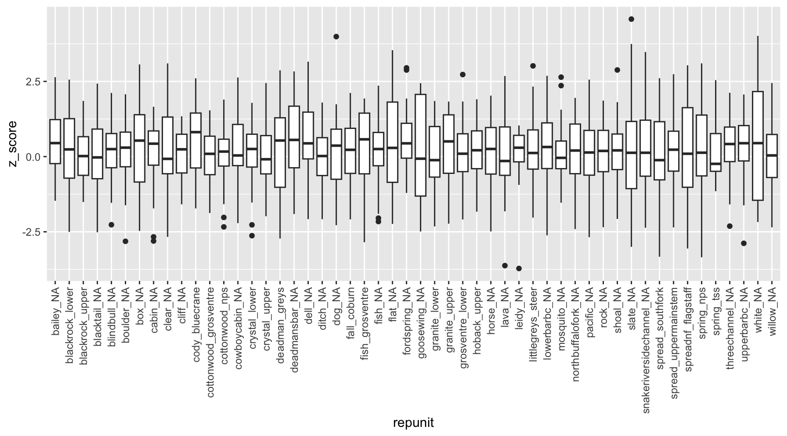
quartz_off_screen
2 Do individuals generally assign to their source reporting unit with high assignment likelihood? Expectation is the mean/median should be near 1, anything much lower would be cause for concern.
# Distribution of assignment likelihood
#| fig-cap: "Distribution of indvidual assignment likelihoods."
p1 <- hist(self_test_exam$scaled_likelihood) # probability of assignment to a single reporting group is very high for nearly all individuals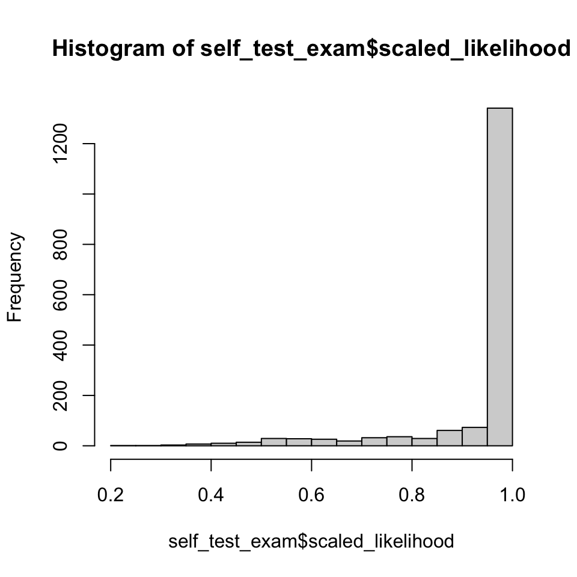
plot(p1, main = paste(paste("Mean = ", round(mean(self_test_exam$scaled_likelihood), digits = 3), "; Median = ", round(median(self_test_exam$scaled_likelihood), digits = 3), sep = "")))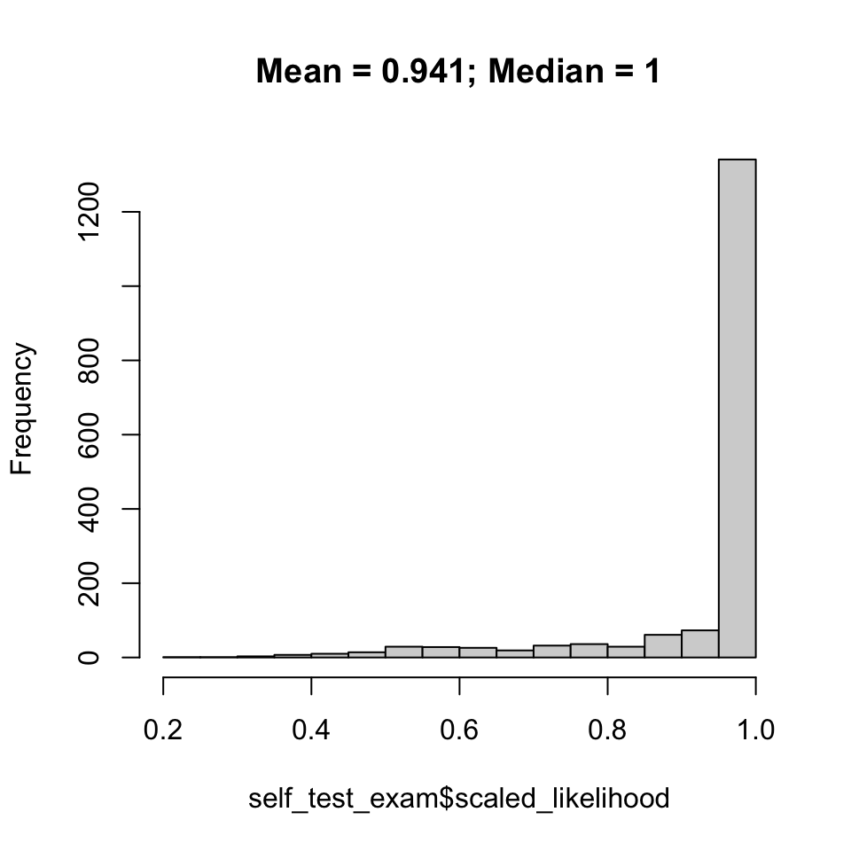
quartz_off_screen
2 Inspect salf-assignment accuracy and efficiency by reporting group.
First, summarize results by reporting group:
# summarize results by reporting group
ref_pops <- unique(self_test_exam$repunit)
prop_assigned_acc <- rep(NA, length(ref_pops))
prop_assigned_eff <- rep(NA, length(ref_pops))
sampsize <- rep(NA, length(ref_pops))
selfassprop <- tibble(ref_pops, prop_assigned_acc, prop_assigned_eff, sampsize)
for (i in 1:dim(selfassprop)[1]) {
corass <- self_test_exam[which(self_test_exam$repunit == ref_pops[i]),] # fish known to be from a given reporting unit
totass <- self_test_exam[which(self_test_exam$inferred_repunit == ref_pops[i]),] # fish assigned to a given reporting unit
selfassprop$prop_assigned_eff[i] <- length(which(corass$repunit == corass$inferred_repunit)) / nrow(corass) # Efficiency - the number of individuals known to belong to a reporting group which were recovered from the mixture
selfassprop$prop_assigned_acc[i] <- length(which(totass$repunit == totass$inferred_repunit)) / nrow(totass) # Accuracy - the proportion of individuals correctly assigned to a reporting group
selfassprop$sampsize[i] <- nrow(corass)
}
# add coordinates for sorting
selfassprop <- selfassprop %>% left_join(gps, by = join_by(ref_pops == repunit)) Self-assignment efficiency, weighted mean
weighted.mean(selfassprop$prop_assigned_eff, selfassprop$sampsize/sum(selfassprop$sampsize), na.rm = T)[1] 0.8239766Self-assignment accuracy, weighted mean
weighted.mean(selfassprop$prop_assigned_acc, selfassprop$sampsize/sum(selfassprop$sampsize), na.rm = T)[1] 0.8387791How does reporting group accuracy and efficiency scale with sample size? Generally positively, but relationships with sample size are weak. I.e., even reporting groups with small sample sizes have relatively high accuracy/efficiency and thus low acc/eff are likely not a function of sample size.
par(mar = c(4,4,1,1), mgp = c(2.5,1,0), mfrow = c(1,2))
plot(prop_assigned_eff ~ sampsize, selfassprop, xlab = "Sample Size", ylab = "Self-Assignment Efficiency")
legend("bottomright", legend = paste("Weighted Mean Eff. = ", round(weighted.mean(selfassprop$prop_assigned_eff, selfassprop$sampsize/sum(selfassprop$sampsize), na.rm = T), digits = 3)), bty = "n")
plot(prop_assigned_acc ~ sampsize, selfassprop, xlab = "Sample Size", ylab = "Self-Assignment Accuracy")
legend("bottomright", legend = paste("Weighted Mean Acc. = ", round(weighted.mean(selfassprop$prop_assigned_acc, selfassprop$sampsize/sum(selfassprop$sampsize), na.rm = T), digits = 3)), bty = "n")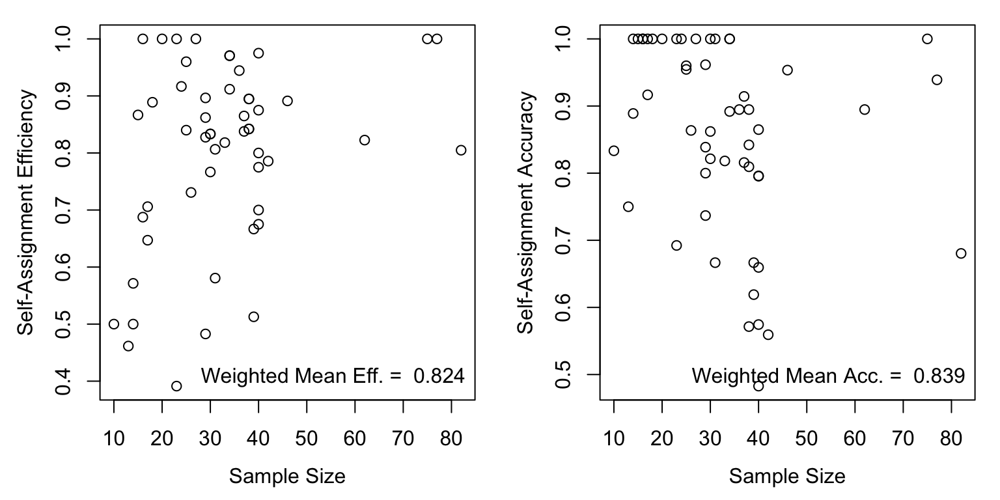
quartz_off_screen
2 view accuracy and efficency by reporting group
selfassprop_gather <- selfassprop %>% gather(type, value, prop_assigned_acc:prop_assigned_eff)
selfassprop_gather %>% ggplot() + geom_bar(aes(x = ref_pops, y = value, fill = type), stat = "identity", position = "dodge") +
xlab("Reporting Group") + ylab("Accuracy or Efficiency") + theme_bw() +
theme(axis.text.x = element_text(angle = 90, vjust = 0.5), legend.position = "top") +
scale_fill_discrete(name = "", labels = c("Accuracy", "Efficiency"))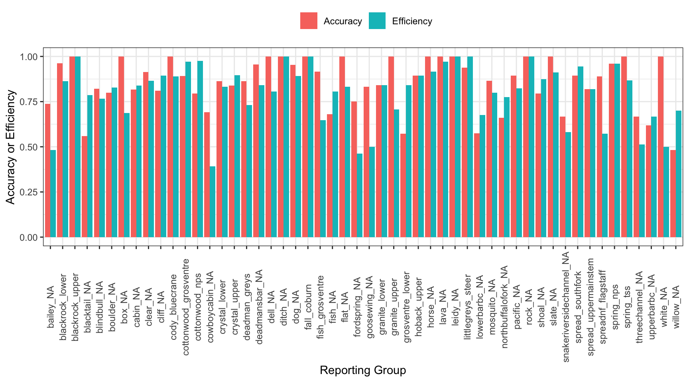
quartz_off_screen
2 Reproduce the plot above, but only show accuracy and use numbered reporting groups, by latitude (for supplementary materials).
selfassprop %>% ggplot() + geom_bar(aes(x = reorder(ref_pops, -lat), y = prop_assigned_acc), stat = "identity", position = "dodge", color = "black", fill = "grey") +
xlab("Reporting unit") + ylab("Self-assignment accuracy") + theme_bw() +
theme(axis.text.x = element_text(angle = 90, vjust = 0.5), legend.position = "top") +
scale_x_discrete(labels = c(1:52))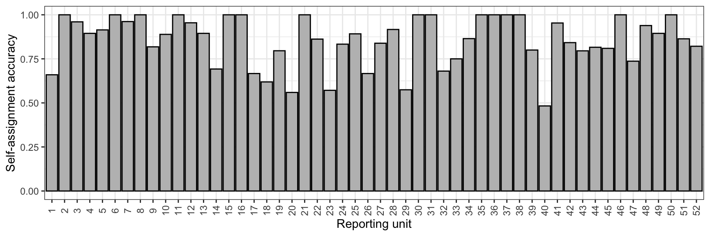
quartz_off_screen
2 Write-out self-assignment test results
write_csv(self_test_exam[,c(1:10)], file = "/Users/jeffbaldock/Library/CloudStorage/GoogleDrive-jbaldock@uwyo.edu/Shared drives/wyo-coop-baldock/UWyoming/Snake River Cutthroat/Analyses/Snake River GSI Quarto/Baseline Testing/Self Assignment/self_assign_results_individuals.csv")
write_csv(selfassprop, file = "/Users/jeffbaldock/Library/CloudStorage/GoogleDrive-jbaldock@uwyo.edu/Shared drives/wyo-coop-baldock/UWyoming/Snake River Cutthroat/Analyses/Snake River GSI Quarto/Baseline Testing/Self Assignment/self_assign_results_repgroups.csv")Generate self-assignment confusion matrix: to which reporting units are individuals of known-origin being (mistakenly) assigned?
conf_mat <- matrix(data = NA, nrow = length(unique(self_test_exam$repunit)), ncol = length(unique(self_test_exam$repunit)))
rownames(conf_mat) <- selfassprop$ref_pops
colnames(conf_mat) <- selfassprop$ref_pops
for (i in 1:nrow(conf_mat)){
for (j in 1:ncol(conf_mat)){
conf_mat[i,j] <- length(which(self_test_exam$repunit == rownames(conf_mat)[i] & self_test_exam$inferred_repunit == colnames(conf_mat)[j]))/length(which(self_test_exam$repunit == rownames(conf_mat)[i]))
}
}
# check confusion matrix -- all rows should add to 1
# check <- apply(conf_mat, 1, sum)
# table(check == 1)
reactable(round(conf_mat, digits = 3))Write out confusion matrix
write.csv(conf_mat, file = "/Users/jeffbaldock/Library/CloudStorage/GoogleDrive-jbaldock@uwyo.edu/Shared drives/wyo-coop-baldock/UWyoming/Snake River Cutthroat/Analyses/Snake River GSI Quarto/Baseline Testing/Self Assignment/self_assign_confusion_matrix.csv", row.names = T, quote = F)Simulated mixtures
Evaluate accuracy given our set of SNP markers and the grouping of collections into reporting groups
Simulate mixtures and assign to reporting groups
usr_sims <- assess_reference_loo(reference = ref_input, gen_start_col = 5, reps = 500, mixsize = 1000, return_indiv_posteriors = TRUE)++++ Starting in on repunit_scenario 1 with collection scenario 1 ++++Doing LOO simulations rep 1 of 500Warning: `as.tibble()` was deprecated in tibble 2.0.0.
ℹ Please use `as_tibble()` instead.
ℹ The signature and semantics have changed, see `?as_tibble`.
ℹ The deprecated feature was likely used in the rubias package.
Please report the issue to the authors.Doing LOO simulations rep 2 of 500Doing LOO simulations rep 3 of 500Doing LOO simulations rep 4 of 500Doing LOO simulations rep 5 of 500Doing LOO simulations rep 6 of 500Doing LOO simulations rep 7 of 500Doing LOO simulations rep 8 of 500Doing LOO simulations rep 9 of 500Doing LOO simulations rep 10 of 500Doing LOO simulations rep 11 of 500Doing LOO simulations rep 12 of 500Doing LOO simulations rep 13 of 500Doing LOO simulations rep 14 of 500Doing LOO simulations rep 15 of 500Doing LOO simulations rep 16 of 500Doing LOO simulations rep 17 of 500Doing LOO simulations rep 18 of 500Doing LOO simulations rep 19 of 500Doing LOO simulations rep 20 of 500Doing LOO simulations rep 21 of 500Doing LOO simulations rep 22 of 500Doing LOO simulations rep 23 of 500Doing LOO simulations rep 24 of 500Doing LOO simulations rep 25 of 500Doing LOO simulations rep 26 of 500Doing LOO simulations rep 27 of 500Doing LOO simulations rep 28 of 500Doing LOO simulations rep 29 of 500Doing LOO simulations rep 30 of 500Doing LOO simulations rep 31 of 500Doing LOO simulations rep 32 of 500Doing LOO simulations rep 33 of 500Doing LOO simulations rep 34 of 500Doing LOO simulations rep 35 of 500Doing LOO simulations rep 36 of 500Doing LOO simulations rep 37 of 500Doing LOO simulations rep 38 of 500Doing LOO simulations rep 39 of 500Doing LOO simulations rep 40 of 500Doing LOO simulations rep 41 of 500Doing LOO simulations rep 42 of 500Doing LOO simulations rep 43 of 500Doing LOO simulations rep 44 of 500Doing LOO simulations rep 45 of 500Doing LOO simulations rep 46 of 500Doing LOO simulations rep 47 of 500Doing LOO simulations rep 48 of 500Doing LOO simulations rep 49 of 500Doing LOO simulations rep 50 of 500Doing LOO simulations rep 51 of 500Doing LOO simulations rep 52 of 500Doing LOO simulations rep 53 of 500Doing LOO simulations rep 54 of 500Doing LOO simulations rep 55 of 500Doing LOO simulations rep 56 of 500Doing LOO simulations rep 57 of 500Doing LOO simulations rep 58 of 500Doing LOO simulations rep 59 of 500Doing LOO simulations rep 60 of 500Doing LOO simulations rep 61 of 500Doing LOO simulations rep 62 of 500Doing LOO simulations rep 63 of 500Doing LOO simulations rep 64 of 500Doing LOO simulations rep 65 of 500Doing LOO simulations rep 66 of 500Doing LOO simulations rep 67 of 500Doing LOO simulations rep 68 of 500Doing LOO simulations rep 69 of 500Doing LOO simulations rep 70 of 500Doing LOO simulations rep 71 of 500Doing LOO simulations rep 72 of 500Doing LOO simulations rep 73 of 500Doing LOO simulations rep 74 of 500Doing LOO simulations rep 75 of 500Doing LOO simulations rep 76 of 500Doing LOO simulations rep 77 of 500Doing LOO simulations rep 78 of 500Doing LOO simulations rep 79 of 500Doing LOO simulations rep 80 of 500Doing LOO simulations rep 81 of 500Doing LOO simulations rep 82 of 500Doing LOO simulations rep 83 of 500Doing LOO simulations rep 84 of 500Doing LOO simulations rep 85 of 500Doing LOO simulations rep 86 of 500Doing LOO simulations rep 87 of 500Doing LOO simulations rep 88 of 500Doing LOO simulations rep 89 of 500Doing LOO simulations rep 90 of 500Doing LOO simulations rep 91 of 500Doing LOO simulations rep 92 of 500Doing LOO simulations rep 93 of 500Doing LOO simulations rep 94 of 500Doing LOO simulations rep 95 of 500Doing LOO simulations rep 96 of 500Doing LOO simulations rep 97 of 500Doing LOO simulations rep 98 of 500Doing LOO simulations rep 99 of 500Doing LOO simulations rep 100 of 500Doing LOO simulations rep 101 of 500Doing LOO simulations rep 102 of 500Doing LOO simulations rep 103 of 500Doing LOO simulations rep 104 of 500Doing LOO simulations rep 105 of 500Doing LOO simulations rep 106 of 500Doing LOO simulations rep 107 of 500Doing LOO simulations rep 108 of 500Doing LOO simulations rep 109 of 500Doing LOO simulations rep 110 of 500Doing LOO simulations rep 111 of 500Doing LOO simulations rep 112 of 500Doing LOO simulations rep 113 of 500Doing LOO simulations rep 114 of 500Doing LOO simulations rep 115 of 500Doing LOO simulations rep 116 of 500Doing LOO simulations rep 117 of 500Doing LOO simulations rep 118 of 500Doing LOO simulations rep 119 of 500Doing LOO simulations rep 120 of 500Doing LOO simulations rep 121 of 500Doing LOO simulations rep 122 of 500Doing LOO simulations rep 123 of 500Doing LOO simulations rep 124 of 500Doing LOO simulations rep 125 of 500Doing LOO simulations rep 126 of 500Doing LOO simulations rep 127 of 500Doing LOO simulations rep 128 of 500Doing LOO simulations rep 129 of 500Doing LOO simulations rep 130 of 500Doing LOO simulations rep 131 of 500Doing LOO simulations rep 132 of 500Doing LOO simulations rep 133 of 500Doing LOO simulations rep 134 of 500Doing LOO simulations rep 135 of 500Doing LOO simulations rep 136 of 500Doing LOO simulations rep 137 of 500Doing LOO simulations rep 138 of 500Doing LOO simulations rep 139 of 500Doing LOO simulations rep 140 of 500Doing LOO simulations rep 141 of 500Doing LOO simulations rep 142 of 500Doing LOO simulations rep 143 of 500Doing LOO simulations rep 144 of 500Doing LOO simulations rep 145 of 500Doing LOO simulations rep 146 of 500Doing LOO simulations rep 147 of 500Doing LOO simulations rep 148 of 500Doing LOO simulations rep 149 of 500Doing LOO simulations rep 150 of 500Doing LOO simulations rep 151 of 500Doing LOO simulations rep 152 of 500Doing LOO simulations rep 153 of 500Doing LOO simulations rep 154 of 500Doing LOO simulations rep 155 of 500Doing LOO simulations rep 156 of 500Doing LOO simulations rep 157 of 500Doing LOO simulations rep 158 of 500Doing LOO simulations rep 159 of 500Doing LOO simulations rep 160 of 500Doing LOO simulations rep 161 of 500Doing LOO simulations rep 162 of 500Doing LOO simulations rep 163 of 500Doing LOO simulations rep 164 of 500Doing LOO simulations rep 165 of 500Doing LOO simulations rep 166 of 500Doing LOO simulations rep 167 of 500Doing LOO simulations rep 168 of 500Doing LOO simulations rep 169 of 500Doing LOO simulations rep 170 of 500Doing LOO simulations rep 171 of 500Doing LOO simulations rep 172 of 500Doing LOO simulations rep 173 of 500Doing LOO simulations rep 174 of 500Doing LOO simulations rep 175 of 500Doing LOO simulations rep 176 of 500Doing LOO simulations rep 177 of 500Doing LOO simulations rep 178 of 500Doing LOO simulations rep 179 of 500Doing LOO simulations rep 180 of 500Doing LOO simulations rep 181 of 500Doing LOO simulations rep 182 of 500Doing LOO simulations rep 183 of 500Doing LOO simulations rep 184 of 500Doing LOO simulations rep 185 of 500Doing LOO simulations rep 186 of 500Doing LOO simulations rep 187 of 500Doing LOO simulations rep 188 of 500Doing LOO simulations rep 189 of 500Doing LOO simulations rep 190 of 500Doing LOO simulations rep 191 of 500Doing LOO simulations rep 192 of 500Doing LOO simulations rep 193 of 500Doing LOO simulations rep 194 of 500Doing LOO simulations rep 195 of 500Doing LOO simulations rep 196 of 500Doing LOO simulations rep 197 of 500Doing LOO simulations rep 198 of 500Doing LOO simulations rep 199 of 500Doing LOO simulations rep 200 of 500Doing LOO simulations rep 201 of 500Doing LOO simulations rep 202 of 500Doing LOO simulations rep 203 of 500Doing LOO simulations rep 204 of 500Doing LOO simulations rep 205 of 500Doing LOO simulations rep 206 of 500Doing LOO simulations rep 207 of 500Doing LOO simulations rep 208 of 500Doing LOO simulations rep 209 of 500Doing LOO simulations rep 210 of 500Doing LOO simulations rep 211 of 500Doing LOO simulations rep 212 of 500Doing LOO simulations rep 213 of 500Doing LOO simulations rep 214 of 500Doing LOO simulations rep 215 of 500Doing LOO simulations rep 216 of 500Doing LOO simulations rep 217 of 500Doing LOO simulations rep 218 of 500Doing LOO simulations rep 219 of 500Doing LOO simulations rep 220 of 500Doing LOO simulations rep 221 of 500Doing LOO simulations rep 222 of 500Doing LOO simulations rep 223 of 500Doing LOO simulations rep 224 of 500Doing LOO simulations rep 225 of 500Doing LOO simulations rep 226 of 500Doing LOO simulations rep 227 of 500Doing LOO simulations rep 228 of 500Doing LOO simulations rep 229 of 500Doing LOO simulations rep 230 of 500Doing LOO simulations rep 231 of 500Doing LOO simulations rep 232 of 500Doing LOO simulations rep 233 of 500Doing LOO simulations rep 234 of 500Doing LOO simulations rep 235 of 500Doing LOO simulations rep 236 of 500Doing LOO simulations rep 237 of 500Doing LOO simulations rep 238 of 500Doing LOO simulations rep 239 of 500Doing LOO simulations rep 240 of 500Doing LOO simulations rep 241 of 500Doing LOO simulations rep 242 of 500Doing LOO simulations rep 243 of 500Doing LOO simulations rep 244 of 500Doing LOO simulations rep 245 of 500Doing LOO simulations rep 246 of 500Doing LOO simulations rep 247 of 500Doing LOO simulations rep 248 of 500Doing LOO simulations rep 249 of 500Doing LOO simulations rep 250 of 500Doing LOO simulations rep 251 of 500Doing LOO simulations rep 252 of 500Doing LOO simulations rep 253 of 500Doing LOO simulations rep 254 of 500Doing LOO simulations rep 255 of 500Doing LOO simulations rep 256 of 500Doing LOO simulations rep 257 of 500Doing LOO simulations rep 258 of 500Doing LOO simulations rep 259 of 500Doing LOO simulations rep 260 of 500Doing LOO simulations rep 261 of 500Doing LOO simulations rep 262 of 500Doing LOO simulations rep 263 of 500Doing LOO simulations rep 264 of 500Doing LOO simulations rep 265 of 500Doing LOO simulations rep 266 of 500Doing LOO simulations rep 267 of 500Doing LOO simulations rep 268 of 500Doing LOO simulations rep 269 of 500Doing LOO simulations rep 270 of 500Doing LOO simulations rep 271 of 500Doing LOO simulations rep 272 of 500Doing LOO simulations rep 273 of 500Doing LOO simulations rep 274 of 500Doing LOO simulations rep 275 of 500Doing LOO simulations rep 276 of 500Doing LOO simulations rep 277 of 500Doing LOO simulations rep 278 of 500Doing LOO simulations rep 279 of 500Doing LOO simulations rep 280 of 500Doing LOO simulations rep 281 of 500Doing LOO simulations rep 282 of 500Doing LOO simulations rep 283 of 500Doing LOO simulations rep 284 of 500Doing LOO simulations rep 285 of 500Doing LOO simulations rep 286 of 500Doing LOO simulations rep 287 of 500Doing LOO simulations rep 288 of 500Doing LOO simulations rep 289 of 500Doing LOO simulations rep 290 of 500Doing LOO simulations rep 291 of 500Doing LOO simulations rep 292 of 500Doing LOO simulations rep 293 of 500Doing LOO simulations rep 294 of 500Doing LOO simulations rep 295 of 500Doing LOO simulations rep 296 of 500Doing LOO simulations rep 297 of 500Doing LOO simulations rep 298 of 500Doing LOO simulations rep 299 of 500Doing LOO simulations rep 300 of 500Doing LOO simulations rep 301 of 500Doing LOO simulations rep 302 of 500Doing LOO simulations rep 303 of 500Doing LOO simulations rep 304 of 500Doing LOO simulations rep 305 of 500Doing LOO simulations rep 306 of 500Doing LOO simulations rep 307 of 500Doing LOO simulations rep 308 of 500Doing LOO simulations rep 309 of 500Doing LOO simulations rep 310 of 500Doing LOO simulations rep 311 of 500Doing LOO simulations rep 312 of 500Doing LOO simulations rep 313 of 500Doing LOO simulations rep 314 of 500Doing LOO simulations rep 315 of 500Doing LOO simulations rep 316 of 500Doing LOO simulations rep 317 of 500Doing LOO simulations rep 318 of 500Doing LOO simulations rep 319 of 500Doing LOO simulations rep 320 of 500Doing LOO simulations rep 321 of 500Doing LOO simulations rep 322 of 500Doing LOO simulations rep 323 of 500Doing LOO simulations rep 324 of 500Doing LOO simulations rep 325 of 500Doing LOO simulations rep 326 of 500Doing LOO simulations rep 327 of 500Doing LOO simulations rep 328 of 500Doing LOO simulations rep 329 of 500Doing LOO simulations rep 330 of 500Doing LOO simulations rep 331 of 500Doing LOO simulations rep 332 of 500Doing LOO simulations rep 333 of 500Doing LOO simulations rep 334 of 500Doing LOO simulations rep 335 of 500Doing LOO simulations rep 336 of 500Doing LOO simulations rep 337 of 500Doing LOO simulations rep 338 of 500Doing LOO simulations rep 339 of 500Doing LOO simulations rep 340 of 500Doing LOO simulations rep 341 of 500Doing LOO simulations rep 342 of 500Doing LOO simulations rep 343 of 500Doing LOO simulations rep 344 of 500Doing LOO simulations rep 345 of 500Doing LOO simulations rep 346 of 500Doing LOO simulations rep 347 of 500Doing LOO simulations rep 348 of 500Doing LOO simulations rep 349 of 500Doing LOO simulations rep 350 of 500Doing LOO simulations rep 351 of 500Doing LOO simulations rep 352 of 500Doing LOO simulations rep 353 of 500Doing LOO simulations rep 354 of 500Doing LOO simulations rep 355 of 500Doing LOO simulations rep 356 of 500Doing LOO simulations rep 357 of 500Doing LOO simulations rep 358 of 500Doing LOO simulations rep 359 of 500Doing LOO simulations rep 360 of 500Doing LOO simulations rep 361 of 500Doing LOO simulations rep 362 of 500Doing LOO simulations rep 363 of 500Doing LOO simulations rep 364 of 500Doing LOO simulations rep 365 of 500Doing LOO simulations rep 366 of 500Doing LOO simulations rep 367 of 500Doing LOO simulations rep 368 of 500Doing LOO simulations rep 369 of 500Doing LOO simulations rep 370 of 500Doing LOO simulations rep 371 of 500Doing LOO simulations rep 372 of 500Doing LOO simulations rep 373 of 500Doing LOO simulations rep 374 of 500Doing LOO simulations rep 375 of 500Doing LOO simulations rep 376 of 500Doing LOO simulations rep 377 of 500Doing LOO simulations rep 378 of 500Doing LOO simulations rep 379 of 500Doing LOO simulations rep 380 of 500Doing LOO simulations rep 381 of 500Doing LOO simulations rep 382 of 500Doing LOO simulations rep 383 of 500Doing LOO simulations rep 384 of 500Doing LOO simulations rep 385 of 500Doing LOO simulations rep 386 of 500Doing LOO simulations rep 387 of 500Doing LOO simulations rep 388 of 500Doing LOO simulations rep 389 of 500Doing LOO simulations rep 390 of 500Doing LOO simulations rep 391 of 500Doing LOO simulations rep 392 of 500Doing LOO simulations rep 393 of 500Doing LOO simulations rep 394 of 500Doing LOO simulations rep 395 of 500Doing LOO simulations rep 396 of 500Doing LOO simulations rep 397 of 500Doing LOO simulations rep 398 of 500Doing LOO simulations rep 399 of 500Doing LOO simulations rep 400 of 500Doing LOO simulations rep 401 of 500Doing LOO simulations rep 402 of 500Doing LOO simulations rep 403 of 500Doing LOO simulations rep 404 of 500Doing LOO simulations rep 405 of 500Doing LOO simulations rep 406 of 500Doing LOO simulations rep 407 of 500Doing LOO simulations rep 408 of 500Doing LOO simulations rep 409 of 500Doing LOO simulations rep 410 of 500Doing LOO simulations rep 411 of 500Doing LOO simulations rep 412 of 500Doing LOO simulations rep 413 of 500Doing LOO simulations rep 414 of 500Doing LOO simulations rep 415 of 500Doing LOO simulations rep 416 of 500Doing LOO simulations rep 417 of 500Doing LOO simulations rep 418 of 500Doing LOO simulations rep 419 of 500Doing LOO simulations rep 420 of 500Doing LOO simulations rep 421 of 500Doing LOO simulations rep 422 of 500Doing LOO simulations rep 423 of 500Doing LOO simulations rep 424 of 500Doing LOO simulations rep 425 of 500Doing LOO simulations rep 426 of 500Doing LOO simulations rep 427 of 500Doing LOO simulations rep 428 of 500Doing LOO simulations rep 429 of 500Doing LOO simulations rep 430 of 500Doing LOO simulations rep 431 of 500Doing LOO simulations rep 432 of 500Doing LOO simulations rep 433 of 500Doing LOO simulations rep 434 of 500Doing LOO simulations rep 435 of 500Doing LOO simulations rep 436 of 500Doing LOO simulations rep 437 of 500Doing LOO simulations rep 438 of 500Doing LOO simulations rep 439 of 500Doing LOO simulations rep 440 of 500Doing LOO simulations rep 441 of 500Doing LOO simulations rep 442 of 500Doing LOO simulations rep 443 of 500Doing LOO simulations rep 444 of 500Doing LOO simulations rep 445 of 500Doing LOO simulations rep 446 of 500Doing LOO simulations rep 447 of 500Doing LOO simulations rep 448 of 500Doing LOO simulations rep 449 of 500Doing LOO simulations rep 450 of 500Doing LOO simulations rep 451 of 500Doing LOO simulations rep 452 of 500Doing LOO simulations rep 453 of 500Doing LOO simulations rep 454 of 500Doing LOO simulations rep 455 of 500Doing LOO simulations rep 456 of 500Doing LOO simulations rep 457 of 500Doing LOO simulations rep 458 of 500Doing LOO simulations rep 459 of 500Doing LOO simulations rep 460 of 500Doing LOO simulations rep 461 of 500Doing LOO simulations rep 462 of 500Doing LOO simulations rep 463 of 500Doing LOO simulations rep 464 of 500Doing LOO simulations rep 465 of 500Doing LOO simulations rep 466 of 500Doing LOO simulations rep 467 of 500Doing LOO simulations rep 468 of 500Doing LOO simulations rep 469 of 500Doing LOO simulations rep 470 of 500Doing LOO simulations rep 471 of 500Doing LOO simulations rep 472 of 500Doing LOO simulations rep 473 of 500Doing LOO simulations rep 474 of 500Doing LOO simulations rep 475 of 500Doing LOO simulations rep 476 of 500Doing LOO simulations rep 477 of 500Doing LOO simulations rep 478 of 500Doing LOO simulations rep 479 of 500Doing LOO simulations rep 480 of 500Doing LOO simulations rep 481 of 500Doing LOO simulations rep 482 of 500Doing LOO simulations rep 483 of 500Doing LOO simulations rep 484 of 500Doing LOO simulations rep 485 of 500Doing LOO simulations rep 486 of 500Doing LOO simulations rep 487 of 500Doing LOO simulations rep 488 of 500Doing LOO simulations rep 489 of 500Doing LOO simulations rep 490 of 500Doing LOO simulations rep 491 of 500Doing LOO simulations rep 492 of 500Doing LOO simulations rep 493 of 500Doing LOO simulations rep 494 of 500Doing LOO simulations rep 495 of 500Doing LOO simulations rep 496 of 500Doing LOO simulations rep 497 of 500Doing LOO simulations rep 498 of 500Doing LOO simulations rep 499 of 500Doing LOO simulations rep 500 of 500Number of simulations
length(unique(usr_sims$mixing_proportions$iter))[1] 500Mean squared error
(sum((usr_sims$mixing_proportions$post_mean_pi - usr_sims$mixing_proportions$true_pi)^2) / length(unique(usr_sims$mixing_proportions$iter)))[1] 0.003963695Mean residual
(sum((usr_sims$mixing_proportions$post_mean_pi - usr_sims$mixing_proportions$true_pi)) / length(unique(usr_sims$mixing_proportions$iter))) [1] 1.401172e-17Plot estimated proportional contribution against true contribution for all simulations and populations
plot(post_mean_pi ~ true_pi, usr_sims$mixing_proportions, xlab = "True Mixing Proportion", ylab = "Posterior Mean Mixing Proportion")
abline(a = 0, b = 1, col = "red")
legend("topleft", legend = paste("MSE = ", round((sum((usr_sims$mixing_proportions$post_mean_pi - usr_sims$mixing_proportions$true_pi)^2) / length(unique(usr_sims$mixing_proportions$iter))), digits = 4), sep = ""), bty = "n")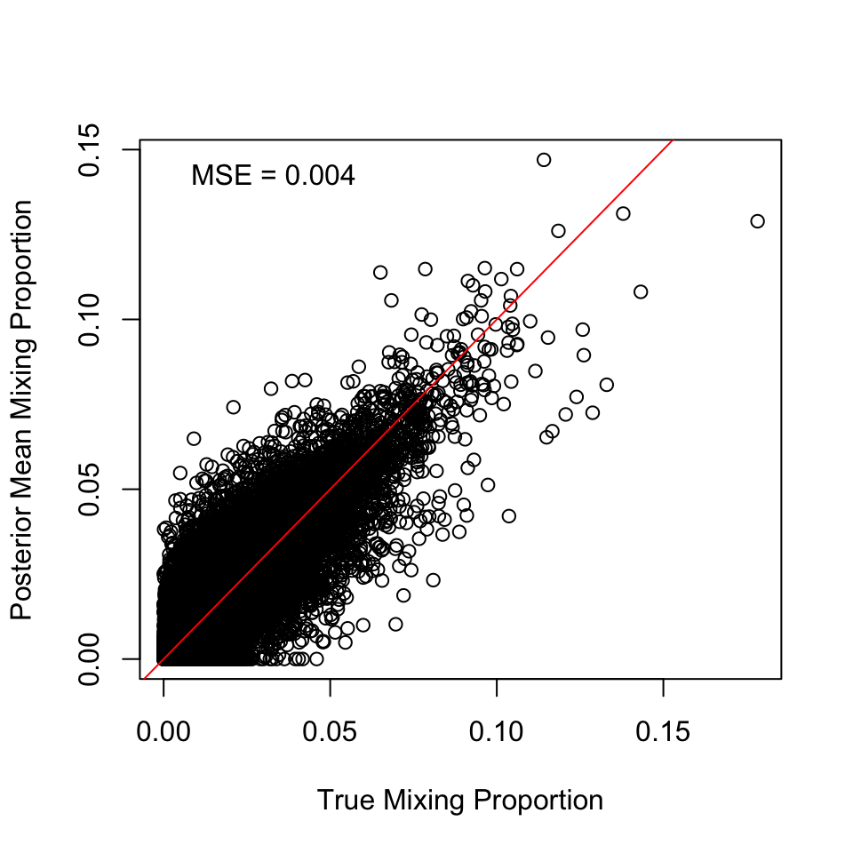
quartz_off_screen
2 Summarize by reporting group and write to file
tmp0 <- usr_sims$mixing_proportions %>%
group_by(repunit) %>%
summarize(mse = sum((post_mean_pi - true_pi)^2) / length(unique(iter)),
mr = sum((post_mean_pi - true_pi)) / length(unique(iter)),
mr.sd = sd(post_mean_pi - true_pi),
mr.025 = quantile(post_mean_pi - true_pi, 0.025),
mr.975 = quantile(post_mean_pi - true_pi, 0.975)) %>%
ungroup()
tmp0 <- tmp0 %>% left_join(gps) Joining with `by = join_by(repunit)`write_csv(tmp0, "/Users/jeffbaldock/Library/CloudStorage/GoogleDrive-jbaldock@uwyo.edu/Shared drives/wyo-coop-baldock/UWyoming/Snake River Cutthroat/Analyses/Snake River GSI Quarto/Baseline Testing/Simulated Mixtures/sim_mix_repgroup_msemr.csv")Mean square error by reporting group
tmp0 %>% ggplot() +
geom_bar(aes(x = repunit, y = mse), stat = "identity", fill = "grey70", color = "black") +
xlab("Reporting Group") + ylab("Mean square error") + theme_bw() +
theme(axis.text.x = element_text(angle = 90, vjust = 0.5))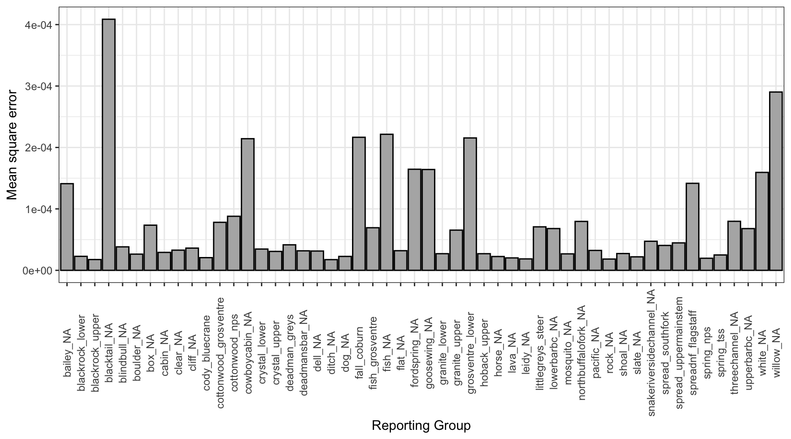
quartz_off_screen
2 Mean residual by reporting group
tmp0 %>% ggplot() +
geom_bar(aes(x = repunit, y = mr), stat = "identity", fill = "grey70", color = "black") +
xlab("Reporting Group") + ylab("Mean residual") + theme_bw() +
theme(axis.text.x = element_text(angle = 90, vjust = 0.5))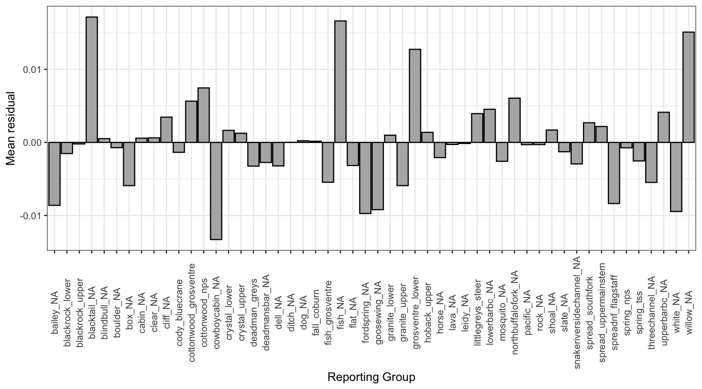
quartz_off_screen
2 Mean residual by reporting group, numbered reporting groups with standard deviations
tmp0 %>% ggplot(aes(x = reorder(repunit, -lat), y = mr)) +
geom_bar(stat = "identity", fill = "grey70", color = "black") +
xlab("Reporting unit") + ylab("Mean residual") + theme_bw() +
theme(axis.text.x = element_text(angle = 90, vjust = 0.5)) +
scale_x_discrete(labels = c(1:52)) +
geom_errorbar(aes(ymin = mr - mr.sd, ymax = mr + mr.sd), width = 0.4)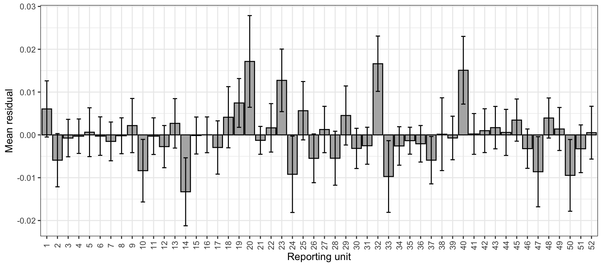
quartz_off_screen
2 quartz_off_screen
2 Plot estimated proportional contribution against true contribution for simulation mixtures
tmp <- usr_sims$mixing_proportions %>%
group_by(iter, repunit) %>%
summarise(true_repprop = sum(true_pi),
reprop_posterior_mean = sum(post_mean_pi),
repu_n = sum(n)) %>%
mutate(repu_n_prop = repu_n / sum(repu_n))`summarise()` has grouped output by 'iter'. You can override using the
`.groups` argument.p <- ggplot(tmp, aes(x = true_repprop, y = reprop_posterior_mean, colour = repunit)) +
geom_point(alpha = 0.2) +
geom_abline(intercept = 0, slope = 1) +
xlab("True Mixing Proportion") + ylab("Posterior Mean Mixing Proportion") +
facet_wrap_paginate(~ repunit, nrow = 4, ncol = 4) +
guides(colour = FALSE)Warning: The `<scale>` argument of `guides()` cannot be `FALSE`. Use "none" instead as
of ggplot2 3.3.4.# pdf("Baseline Data and Testing/Simulated Mixtures/sim_mix_repgroup_scatter.pdf", width = 8, height = 8)
for(i in 1:n_pages(p)) { print(p + facet_wrap_paginate(~ repunit, nrow = 4, ncol = 4, page = i)) }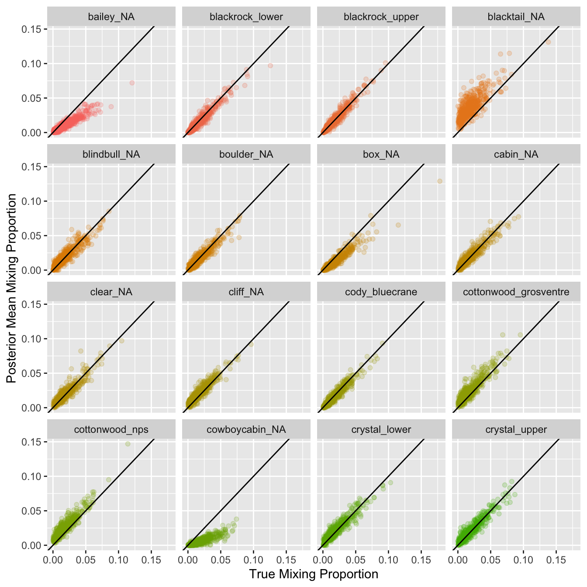
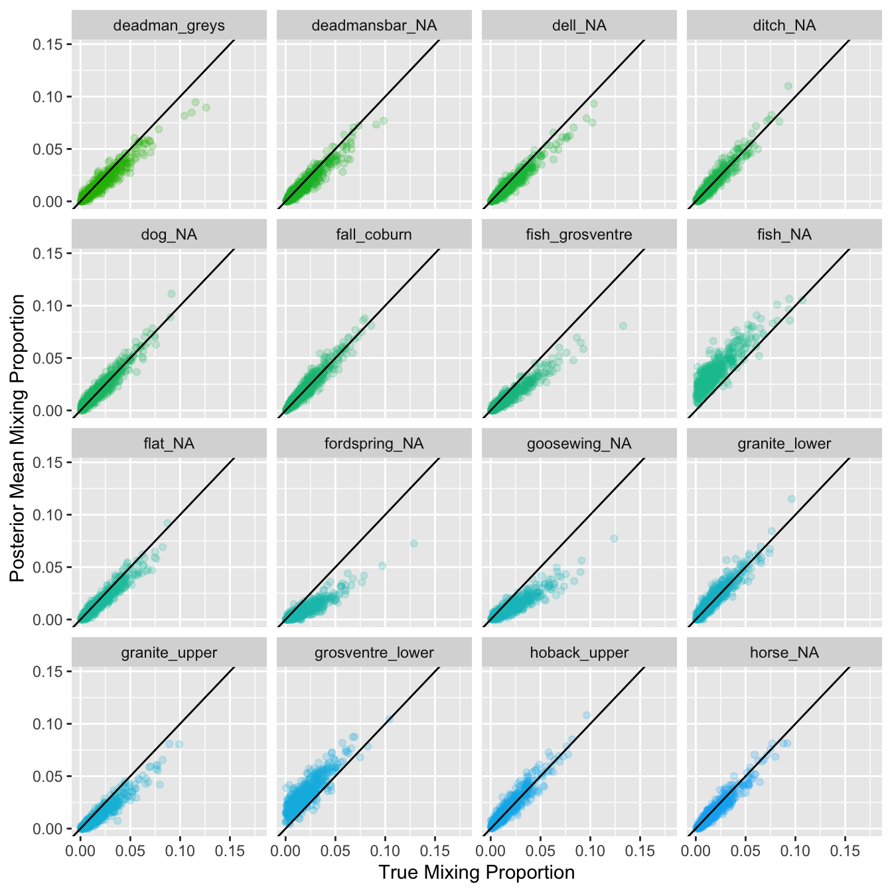
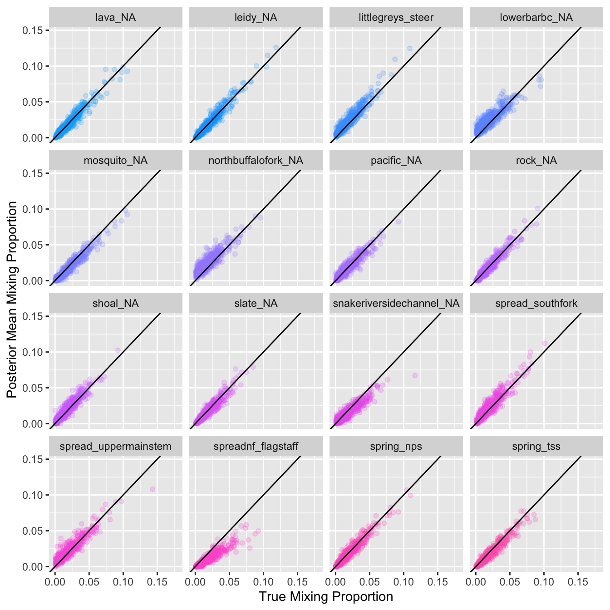
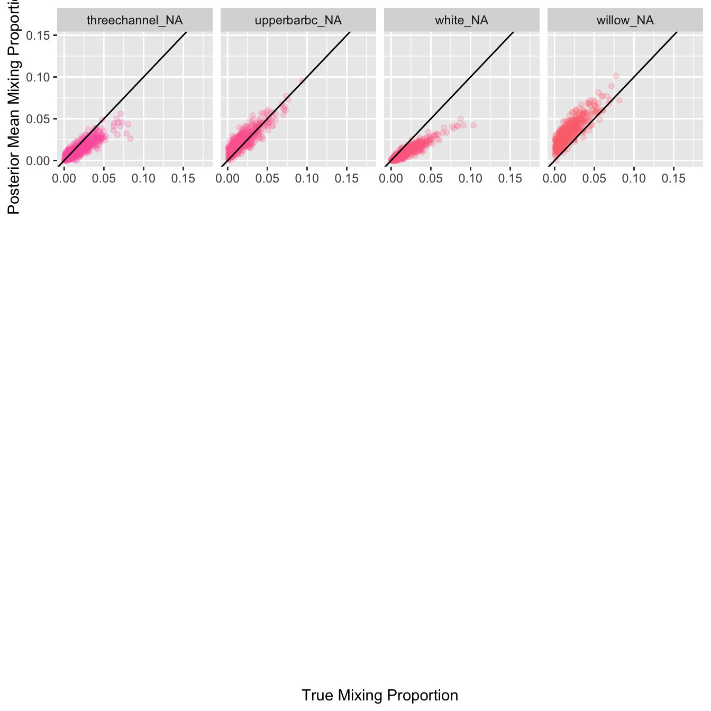
quartz_off_screen
2 Can we true the posteriors from individual fish? Plot distributions of z-scores by reporting group, over all simulations
# first summarize by reporting unit
repu_pofzs <- usr_sims$indiv_posteriors %>%
filter(repunit == simulated_repunit) %>%
group_by(iter, indiv, simulated_repunit, repunit) %>% # first aggregate over reporting units
summarise(repu_PofZ = sum(PofZ)) %>%
ungroup() %>%
arrange(repunit, simulated_repunit) %>%
mutate(simulated_repunit = factor(simulated_repunit, levels = unique(simulated_repunit)))`summarise()` has grouped output by 'iter', 'indiv', 'simulated_repunit'. You
can override using the `.groups` argument.# also get the number of simulated individuals from each collection
num_simmed <- usr_sims$indiv_posteriors %>%
group_by(iter, indiv) %>%
slice(1) %>%
ungroup() %>%
count(simulated_repunit)
# now, plot it
ggplot(repu_pofzs, aes(x = simulated_repunit, y = repu_PofZ)) +
geom_boxplot(aes(colour = repunit)) +
geom_text(data = num_simmed, mapping = aes(y = 1.025, label = n), angle = 90, hjust = 0, vjust = 0.5, size = 3) +
theme(axis.text.x = element_text(angle = 90, hjust = 1, size = 9, vjust = 0.5)) +
ylim(c(NA, 1.1)) +
guides(colour = FALSE)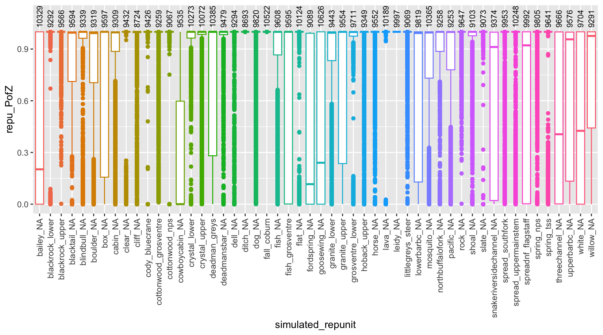
quartz_off_screen
2 100% Simulations
As noted elsewhere, 100% simulations are not often used as they are very unrealistic (i.e., assume mixtures only made up of individuals from a single reporting group). However, we perform them here as they provide another diagnostic tool to assess the performance of our baseline.
Run the simulations and write output to file. 20 simulations per reporting group.
# create list specifying 100% mixtures
hundy_scenarios <- lapply(unique(all_input$repunit)[!is.na(unique(all_input$repunit))], function(x) tibble(repunit = x, ppn = 1.0))
names(hundy_scenarios) <- paste("All", unique(all_input$repunit)[!is.na(unique(all_input$repunit))], sep = "-")
# run the 100% simulations
repu_hundy_results <- assess_reference_loo(reference = ref_input, gen_start_col = 5, reps = 20, mixsize = 500, alpha_repunit = hundy_scenarios)++++ Starting in on repunit_scenario All-bailey_NA with collection scenario 1 ++++Doing LOO simulations rep 1 of 20Doing LOO simulations rep 2 of 20Doing LOO simulations rep 3 of 20Doing LOO simulations rep 4 of 20Doing LOO simulations rep 5 of 20Doing LOO simulations rep 6 of 20Doing LOO simulations rep 7 of 20Doing LOO simulations rep 8 of 20Doing LOO simulations rep 9 of 20Doing LOO simulations rep 10 of 20Doing LOO simulations rep 11 of 20Doing LOO simulations rep 12 of 20Doing LOO simulations rep 13 of 20Doing LOO simulations rep 14 of 20Doing LOO simulations rep 15 of 20Doing LOO simulations rep 16 of 20Doing LOO simulations rep 17 of 20Doing LOO simulations rep 18 of 20Doing LOO simulations rep 19 of 20Doing LOO simulations rep 20 of 20++++ Starting in on repunit_scenario All-blackrock_lower with collection scenario 1 ++++Doing LOO simulations rep 1 of 20Doing LOO simulations rep 2 of 20Doing LOO simulations rep 3 of 20Doing LOO simulations rep 4 of 20Doing LOO simulations rep 5 of 20Doing LOO simulations rep 6 of 20Doing LOO simulations rep 7 of 20Doing LOO simulations rep 8 of 20Doing LOO simulations rep 9 of 20Doing LOO simulations rep 10 of 20Doing LOO simulations rep 11 of 20Doing LOO simulations rep 12 of 20Doing LOO simulations rep 13 of 20Doing LOO simulations rep 14 of 20Doing LOO simulations rep 15 of 20Doing LOO simulations rep 16 of 20Doing LOO simulations rep 17 of 20Doing LOO simulations rep 18 of 20Doing LOO simulations rep 19 of 20Doing LOO simulations rep 20 of 20++++ Starting in on repunit_scenario All-blackrock_upper with collection scenario 1 ++++Doing LOO simulations rep 1 of 20Doing LOO simulations rep 2 of 20Doing LOO simulations rep 3 of 20Doing LOO simulations rep 4 of 20Doing LOO simulations rep 5 of 20Doing LOO simulations rep 6 of 20Doing LOO simulations rep 7 of 20Doing LOO simulations rep 8 of 20Doing LOO simulations rep 9 of 20Doing LOO simulations rep 10 of 20Doing LOO simulations rep 11 of 20Doing LOO simulations rep 12 of 20Doing LOO simulations rep 13 of 20Doing LOO simulations rep 14 of 20Doing LOO simulations rep 15 of 20Doing LOO simulations rep 16 of 20Doing LOO simulations rep 17 of 20Doing LOO simulations rep 18 of 20Doing LOO simulations rep 19 of 20Doing LOO simulations rep 20 of 20++++ Starting in on repunit_scenario All-blacktail_NA with collection scenario 1 ++++Doing LOO simulations rep 1 of 20Doing LOO simulations rep 2 of 20Doing LOO simulations rep 3 of 20Doing LOO simulations rep 4 of 20Doing LOO simulations rep 5 of 20Doing LOO simulations rep 6 of 20Doing LOO simulations rep 7 of 20Doing LOO simulations rep 8 of 20Doing LOO simulations rep 9 of 20Doing LOO simulations rep 10 of 20Doing LOO simulations rep 11 of 20Doing LOO simulations rep 12 of 20Doing LOO simulations rep 13 of 20Doing LOO simulations rep 14 of 20Doing LOO simulations rep 15 of 20Doing LOO simulations rep 16 of 20Doing LOO simulations rep 17 of 20Doing LOO simulations rep 18 of 20Doing LOO simulations rep 19 of 20Doing LOO simulations rep 20 of 20++++ Starting in on repunit_scenario All-blindbull_NA with collection scenario 1 ++++Doing LOO simulations rep 1 of 20Doing LOO simulations rep 2 of 20Doing LOO simulations rep 3 of 20Doing LOO simulations rep 4 of 20Doing LOO simulations rep 5 of 20Doing LOO simulations rep 6 of 20Doing LOO simulations rep 7 of 20Doing LOO simulations rep 8 of 20Doing LOO simulations rep 9 of 20Doing LOO simulations rep 10 of 20Doing LOO simulations rep 11 of 20Doing LOO simulations rep 12 of 20Doing LOO simulations rep 13 of 20Doing LOO simulations rep 14 of 20Doing LOO simulations rep 15 of 20Doing LOO simulations rep 16 of 20Doing LOO simulations rep 17 of 20Doing LOO simulations rep 18 of 20Doing LOO simulations rep 19 of 20Doing LOO simulations rep 20 of 20++++ Starting in on repunit_scenario All-cody_bluecrane with collection scenario 1 ++++Doing LOO simulations rep 1 of 20Doing LOO simulations rep 2 of 20Doing LOO simulations rep 3 of 20Doing LOO simulations rep 4 of 20Doing LOO simulations rep 5 of 20Doing LOO simulations rep 6 of 20Doing LOO simulations rep 7 of 20Doing LOO simulations rep 8 of 20Doing LOO simulations rep 9 of 20Doing LOO simulations rep 10 of 20Doing LOO simulations rep 11 of 20Doing LOO simulations rep 12 of 20Doing LOO simulations rep 13 of 20Doing LOO simulations rep 14 of 20Doing LOO simulations rep 15 of 20Doing LOO simulations rep 16 of 20Doing LOO simulations rep 17 of 20Doing LOO simulations rep 18 of 20Doing LOO simulations rep 19 of 20Doing LOO simulations rep 20 of 20++++ Starting in on repunit_scenario All-boulder_NA with collection scenario 1 ++++Doing LOO simulations rep 1 of 20Doing LOO simulations rep 2 of 20Doing LOO simulations rep 3 of 20Doing LOO simulations rep 4 of 20Doing LOO simulations rep 5 of 20Doing LOO simulations rep 6 of 20Doing LOO simulations rep 7 of 20Doing LOO simulations rep 8 of 20Doing LOO simulations rep 9 of 20Doing LOO simulations rep 10 of 20Doing LOO simulations rep 11 of 20Doing LOO simulations rep 12 of 20Doing LOO simulations rep 13 of 20Doing LOO simulations rep 14 of 20Doing LOO simulations rep 15 of 20Doing LOO simulations rep 16 of 20Doing LOO simulations rep 17 of 20Doing LOO simulations rep 18 of 20Doing LOO simulations rep 19 of 20Doing LOO simulations rep 20 of 20++++ Starting in on repunit_scenario All-box_NA with collection scenario 1 ++++Doing LOO simulations rep 1 of 20Doing LOO simulations rep 2 of 20Doing LOO simulations rep 3 of 20Doing LOO simulations rep 4 of 20Doing LOO simulations rep 5 of 20Doing LOO simulations rep 6 of 20Doing LOO simulations rep 7 of 20Doing LOO simulations rep 8 of 20Doing LOO simulations rep 9 of 20Doing LOO simulations rep 10 of 20Doing LOO simulations rep 11 of 20Doing LOO simulations rep 12 of 20Doing LOO simulations rep 13 of 20Doing LOO simulations rep 14 of 20Doing LOO simulations rep 15 of 20Doing LOO simulations rep 16 of 20Doing LOO simulations rep 17 of 20Doing LOO simulations rep 18 of 20Doing LOO simulations rep 19 of 20Doing LOO simulations rep 20 of 20++++ Starting in on repunit_scenario All-cabin_NA with collection scenario 1 ++++Doing LOO simulations rep 1 of 20Doing LOO simulations rep 2 of 20Doing LOO simulations rep 3 of 20Doing LOO simulations rep 4 of 20Doing LOO simulations rep 5 of 20Doing LOO simulations rep 6 of 20Doing LOO simulations rep 7 of 20Doing LOO simulations rep 8 of 20Doing LOO simulations rep 9 of 20Doing LOO simulations rep 10 of 20Doing LOO simulations rep 11 of 20Doing LOO simulations rep 12 of 20Doing LOO simulations rep 13 of 20Doing LOO simulations rep 14 of 20Doing LOO simulations rep 15 of 20Doing LOO simulations rep 16 of 20Doing LOO simulations rep 17 of 20Doing LOO simulations rep 18 of 20Doing LOO simulations rep 19 of 20Doing LOO simulations rep 20 of 20++++ Starting in on repunit_scenario All-clear_NA with collection scenario 1 ++++Doing LOO simulations rep 1 of 20Doing LOO simulations rep 2 of 20Doing LOO simulations rep 3 of 20Doing LOO simulations rep 4 of 20Doing LOO simulations rep 5 of 20Doing LOO simulations rep 6 of 20Doing LOO simulations rep 7 of 20Doing LOO simulations rep 8 of 20Doing LOO simulations rep 9 of 20Doing LOO simulations rep 10 of 20Doing LOO simulations rep 11 of 20Doing LOO simulations rep 12 of 20Doing LOO simulations rep 13 of 20Doing LOO simulations rep 14 of 20Doing LOO simulations rep 15 of 20Doing LOO simulations rep 16 of 20Doing LOO simulations rep 17 of 20Doing LOO simulations rep 18 of 20Doing LOO simulations rep 19 of 20Doing LOO simulations rep 20 of 20++++ Starting in on repunit_scenario All-cliff_NA with collection scenario 1 ++++Doing LOO simulations rep 1 of 20Doing LOO simulations rep 2 of 20Doing LOO simulations rep 3 of 20Doing LOO simulations rep 4 of 20Doing LOO simulations rep 5 of 20Doing LOO simulations rep 6 of 20Doing LOO simulations rep 7 of 20Doing LOO simulations rep 8 of 20Doing LOO simulations rep 9 of 20Doing LOO simulations rep 10 of 20Doing LOO simulations rep 11 of 20Doing LOO simulations rep 12 of 20Doing LOO simulations rep 13 of 20Doing LOO simulations rep 14 of 20Doing LOO simulations rep 15 of 20Doing LOO simulations rep 16 of 20Doing LOO simulations rep 17 of 20Doing LOO simulations rep 18 of 20Doing LOO simulations rep 19 of 20Doing LOO simulations rep 20 of 20++++ Starting in on repunit_scenario All-fall_coburn with collection scenario 1 ++++Doing LOO simulations rep 1 of 20Doing LOO simulations rep 2 of 20Doing LOO simulations rep 3 of 20Doing LOO simulations rep 4 of 20Doing LOO simulations rep 5 of 20Doing LOO simulations rep 6 of 20Doing LOO simulations rep 7 of 20Doing LOO simulations rep 8 of 20Doing LOO simulations rep 9 of 20Doing LOO simulations rep 10 of 20Doing LOO simulations rep 11 of 20Doing LOO simulations rep 12 of 20Doing LOO simulations rep 13 of 20Doing LOO simulations rep 14 of 20Doing LOO simulations rep 15 of 20Doing LOO simulations rep 16 of 20Doing LOO simulations rep 17 of 20Doing LOO simulations rep 18 of 20Doing LOO simulations rep 19 of 20Doing LOO simulations rep 20 of 20++++ Starting in on repunit_scenario All-cottonwood_grosventre with collection scenario 1 ++++Doing LOO simulations rep 1 of 20Doing LOO simulations rep 2 of 20Doing LOO simulations rep 3 of 20Doing LOO simulations rep 4 of 20Doing LOO simulations rep 5 of 20Doing LOO simulations rep 6 of 20Doing LOO simulations rep 7 of 20Doing LOO simulations rep 8 of 20Doing LOO simulations rep 9 of 20Doing LOO simulations rep 10 of 20Doing LOO simulations rep 11 of 20Doing LOO simulations rep 12 of 20Doing LOO simulations rep 13 of 20Doing LOO simulations rep 14 of 20Doing LOO simulations rep 15 of 20Doing LOO simulations rep 16 of 20Doing LOO simulations rep 17 of 20Doing LOO simulations rep 18 of 20Doing LOO simulations rep 19 of 20Doing LOO simulations rep 20 of 20++++ Starting in on repunit_scenario All-cottonwood_nps with collection scenario 1 ++++Doing LOO simulations rep 1 of 20Doing LOO simulations rep 2 of 20Doing LOO simulations rep 3 of 20Doing LOO simulations rep 4 of 20Doing LOO simulations rep 5 of 20Doing LOO simulations rep 6 of 20Doing LOO simulations rep 7 of 20Doing LOO simulations rep 8 of 20Doing LOO simulations rep 9 of 20Doing LOO simulations rep 10 of 20Doing LOO simulations rep 11 of 20Doing LOO simulations rep 12 of 20Doing LOO simulations rep 13 of 20Doing LOO simulations rep 14 of 20Doing LOO simulations rep 15 of 20Doing LOO simulations rep 16 of 20Doing LOO simulations rep 17 of 20Doing LOO simulations rep 18 of 20Doing LOO simulations rep 19 of 20Doing LOO simulations rep 20 of 20++++ Starting in on repunit_scenario All-cowboycabin_NA with collection scenario 1 ++++Doing LOO simulations rep 1 of 20Doing LOO simulations rep 2 of 20Doing LOO simulations rep 3 of 20Doing LOO simulations rep 4 of 20Doing LOO simulations rep 5 of 20Doing LOO simulations rep 6 of 20Doing LOO simulations rep 7 of 20Doing LOO simulations rep 8 of 20Doing LOO simulations rep 9 of 20Doing LOO simulations rep 10 of 20Doing LOO simulations rep 11 of 20Doing LOO simulations rep 12 of 20Doing LOO simulations rep 13 of 20Doing LOO simulations rep 14 of 20Doing LOO simulations rep 15 of 20Doing LOO simulations rep 16 of 20Doing LOO simulations rep 17 of 20Doing LOO simulations rep 18 of 20Doing LOO simulations rep 19 of 20Doing LOO simulations rep 20 of 20++++ Starting in on repunit_scenario All-crystal_lower with collection scenario 1 ++++Doing LOO simulations rep 1 of 20Doing LOO simulations rep 2 of 20Doing LOO simulations rep 3 of 20Doing LOO simulations rep 4 of 20Doing LOO simulations rep 5 of 20Doing LOO simulations rep 6 of 20Doing LOO simulations rep 7 of 20Doing LOO simulations rep 8 of 20Doing LOO simulations rep 9 of 20Doing LOO simulations rep 10 of 20Doing LOO simulations rep 11 of 20Doing LOO simulations rep 12 of 20Doing LOO simulations rep 13 of 20Doing LOO simulations rep 14 of 20Doing LOO simulations rep 15 of 20Doing LOO simulations rep 16 of 20Doing LOO simulations rep 17 of 20Doing LOO simulations rep 18 of 20Doing LOO simulations rep 19 of 20Doing LOO simulations rep 20 of 20++++ Starting in on repunit_scenario All-crystal_upper with collection scenario 1 ++++Doing LOO simulations rep 1 of 20Doing LOO simulations rep 2 of 20Doing LOO simulations rep 3 of 20Doing LOO simulations rep 4 of 20Doing LOO simulations rep 5 of 20Doing LOO simulations rep 6 of 20Doing LOO simulations rep 7 of 20Doing LOO simulations rep 8 of 20Doing LOO simulations rep 9 of 20Doing LOO simulations rep 10 of 20Doing LOO simulations rep 11 of 20Doing LOO simulations rep 12 of 20Doing LOO simulations rep 13 of 20Doing LOO simulations rep 14 of 20Doing LOO simulations rep 15 of 20Doing LOO simulations rep 16 of 20Doing LOO simulations rep 17 of 20Doing LOO simulations rep 18 of 20Doing LOO simulations rep 19 of 20Doing LOO simulations rep 20 of 20++++ Starting in on repunit_scenario All-deadmansbar_NA with collection scenario 1 ++++Doing LOO simulations rep 1 of 20Doing LOO simulations rep 2 of 20Doing LOO simulations rep 3 of 20Doing LOO simulations rep 4 of 20Doing LOO simulations rep 5 of 20Doing LOO simulations rep 6 of 20Doing LOO simulations rep 7 of 20Doing LOO simulations rep 8 of 20Doing LOO simulations rep 9 of 20Doing LOO simulations rep 10 of 20Doing LOO simulations rep 11 of 20Doing LOO simulations rep 12 of 20Doing LOO simulations rep 13 of 20Doing LOO simulations rep 14 of 20Doing LOO simulations rep 15 of 20Doing LOO simulations rep 16 of 20Doing LOO simulations rep 17 of 20Doing LOO simulations rep 18 of 20Doing LOO simulations rep 19 of 20Doing LOO simulations rep 20 of 20++++ Starting in on repunit_scenario All-dell_NA with collection scenario 1 ++++Doing LOO simulations rep 1 of 20Doing LOO simulations rep 2 of 20Doing LOO simulations rep 3 of 20Doing LOO simulations rep 4 of 20Doing LOO simulations rep 5 of 20Doing LOO simulations rep 6 of 20Doing LOO simulations rep 7 of 20Doing LOO simulations rep 8 of 20Doing LOO simulations rep 9 of 20Doing LOO simulations rep 10 of 20Doing LOO simulations rep 11 of 20Doing LOO simulations rep 12 of 20Doing LOO simulations rep 13 of 20Doing LOO simulations rep 14 of 20Doing LOO simulations rep 15 of 20Doing LOO simulations rep 16 of 20Doing LOO simulations rep 17 of 20Doing LOO simulations rep 18 of 20Doing LOO simulations rep 19 of 20Doing LOO simulations rep 20 of 20++++ Starting in on repunit_scenario All-ditch_NA with collection scenario 1 ++++Doing LOO simulations rep 1 of 20Doing LOO simulations rep 2 of 20Doing LOO simulations rep 3 of 20Doing LOO simulations rep 4 of 20Doing LOO simulations rep 5 of 20Doing LOO simulations rep 6 of 20Doing LOO simulations rep 7 of 20Doing LOO simulations rep 8 of 20Doing LOO simulations rep 9 of 20Doing LOO simulations rep 10 of 20Doing LOO simulations rep 11 of 20Doing LOO simulations rep 12 of 20Doing LOO simulations rep 13 of 20Doing LOO simulations rep 14 of 20Doing LOO simulations rep 15 of 20Doing LOO simulations rep 16 of 20Doing LOO simulations rep 17 of 20Doing LOO simulations rep 18 of 20Doing LOO simulations rep 19 of 20Doing LOO simulations rep 20 of 20++++ Starting in on repunit_scenario All-dog_NA with collection scenario 1 ++++Doing LOO simulations rep 1 of 20Doing LOO simulations rep 2 of 20Doing LOO simulations rep 3 of 20Doing LOO simulations rep 4 of 20Doing LOO simulations rep 5 of 20Doing LOO simulations rep 6 of 20Doing LOO simulations rep 7 of 20Doing LOO simulations rep 8 of 20Doing LOO simulations rep 9 of 20Doing LOO simulations rep 10 of 20Doing LOO simulations rep 11 of 20Doing LOO simulations rep 12 of 20Doing LOO simulations rep 13 of 20Doing LOO simulations rep 14 of 20Doing LOO simulations rep 15 of 20Doing LOO simulations rep 16 of 20Doing LOO simulations rep 17 of 20Doing LOO simulations rep 18 of 20Doing LOO simulations rep 19 of 20Doing LOO simulations rep 20 of 20++++ Starting in on repunit_scenario All-fish_grosventre with collection scenario 1 ++++Doing LOO simulations rep 1 of 20Doing LOO simulations rep 2 of 20Doing LOO simulations rep 3 of 20Doing LOO simulations rep 4 of 20Doing LOO simulations rep 5 of 20Doing LOO simulations rep 6 of 20Doing LOO simulations rep 7 of 20Doing LOO simulations rep 8 of 20Doing LOO simulations rep 9 of 20Doing LOO simulations rep 10 of 20Doing LOO simulations rep 11 of 20Doing LOO simulations rep 12 of 20Doing LOO simulations rep 13 of 20Doing LOO simulations rep 14 of 20Doing LOO simulations rep 15 of 20Doing LOO simulations rep 16 of 20Doing LOO simulations rep 17 of 20Doing LOO simulations rep 18 of 20Doing LOO simulations rep 19 of 20Doing LOO simulations rep 20 of 20++++ Starting in on repunit_scenario All-fish_NA with collection scenario 1 ++++Doing LOO simulations rep 1 of 20Doing LOO simulations rep 2 of 20Doing LOO simulations rep 3 of 20Doing LOO simulations rep 4 of 20Doing LOO simulations rep 5 of 20Doing LOO simulations rep 6 of 20Doing LOO simulations rep 7 of 20Doing LOO simulations rep 8 of 20Doing LOO simulations rep 9 of 20Doing LOO simulations rep 10 of 20Doing LOO simulations rep 11 of 20Doing LOO simulations rep 12 of 20Doing LOO simulations rep 13 of 20Doing LOO simulations rep 14 of 20Doing LOO simulations rep 15 of 20Doing LOO simulations rep 16 of 20Doing LOO simulations rep 17 of 20Doing LOO simulations rep 18 of 20Doing LOO simulations rep 19 of 20Doing LOO simulations rep 20 of 20++++ Starting in on repunit_scenario All-spreadnf_flagstaff with collection scenario 1 ++++Doing LOO simulations rep 1 of 20Doing LOO simulations rep 2 of 20Doing LOO simulations rep 3 of 20Doing LOO simulations rep 4 of 20Doing LOO simulations rep 5 of 20Doing LOO simulations rep 6 of 20Doing LOO simulations rep 7 of 20Doing LOO simulations rep 8 of 20Doing LOO simulations rep 9 of 20Doing LOO simulations rep 10 of 20Doing LOO simulations rep 11 of 20Doing LOO simulations rep 12 of 20Doing LOO simulations rep 13 of 20Doing LOO simulations rep 14 of 20Doing LOO simulations rep 15 of 20Doing LOO simulations rep 16 of 20Doing LOO simulations rep 17 of 20Doing LOO simulations rep 18 of 20Doing LOO simulations rep 19 of 20Doing LOO simulations rep 20 of 20++++ Starting in on repunit_scenario All-flat_NA with collection scenario 1 ++++Doing LOO simulations rep 1 of 20Doing LOO simulations rep 2 of 20Doing LOO simulations rep 3 of 20Doing LOO simulations rep 4 of 20Doing LOO simulations rep 5 of 20Doing LOO simulations rep 6 of 20Doing LOO simulations rep 7 of 20Doing LOO simulations rep 8 of 20Doing LOO simulations rep 9 of 20Doing LOO simulations rep 10 of 20Doing LOO simulations rep 11 of 20Doing LOO simulations rep 12 of 20Doing LOO simulations rep 13 of 20Doing LOO simulations rep 14 of 20Doing LOO simulations rep 15 of 20Doing LOO simulations rep 16 of 20Doing LOO simulations rep 17 of 20Doing LOO simulations rep 18 of 20Doing LOO simulations rep 19 of 20Doing LOO simulations rep 20 of 20++++ Starting in on repunit_scenario All-fordspring_NA with collection scenario 1 ++++Doing LOO simulations rep 1 of 20Doing LOO simulations rep 2 of 20Doing LOO simulations rep 3 of 20Doing LOO simulations rep 4 of 20Doing LOO simulations rep 5 of 20Doing LOO simulations rep 6 of 20Doing LOO simulations rep 7 of 20Doing LOO simulations rep 8 of 20Doing LOO simulations rep 9 of 20Doing LOO simulations rep 10 of 20Doing LOO simulations rep 11 of 20Doing LOO simulations rep 12 of 20Doing LOO simulations rep 13 of 20Doing LOO simulations rep 14 of 20Doing LOO simulations rep 15 of 20Doing LOO simulations rep 16 of 20Doing LOO simulations rep 17 of 20Doing LOO simulations rep 18 of 20Doing LOO simulations rep 19 of 20Doing LOO simulations rep 20 of 20++++ Starting in on repunit_scenario All-goosewing_NA with collection scenario 1 ++++Doing LOO simulations rep 1 of 20Doing LOO simulations rep 2 of 20Doing LOO simulations rep 3 of 20Doing LOO simulations rep 4 of 20Doing LOO simulations rep 5 of 20Doing LOO simulations rep 6 of 20Doing LOO simulations rep 7 of 20Doing LOO simulations rep 8 of 20Doing LOO simulations rep 9 of 20Doing LOO simulations rep 10 of 20Doing LOO simulations rep 11 of 20Doing LOO simulations rep 12 of 20Doing LOO simulations rep 13 of 20Doing LOO simulations rep 14 of 20Doing LOO simulations rep 15 of 20Doing LOO simulations rep 16 of 20Doing LOO simulations rep 17 of 20Doing LOO simulations rep 18 of 20Doing LOO simulations rep 19 of 20Doing LOO simulations rep 20 of 20++++ Starting in on repunit_scenario All-granite_lower with collection scenario 1 ++++Doing LOO simulations rep 1 of 20Doing LOO simulations rep 2 of 20Doing LOO simulations rep 3 of 20Doing LOO simulations rep 4 of 20Doing LOO simulations rep 5 of 20Doing LOO simulations rep 6 of 20Doing LOO simulations rep 7 of 20Doing LOO simulations rep 8 of 20Doing LOO simulations rep 9 of 20Doing LOO simulations rep 10 of 20Doing LOO simulations rep 11 of 20Doing LOO simulations rep 12 of 20Doing LOO simulations rep 13 of 20Doing LOO simulations rep 14 of 20Doing LOO simulations rep 15 of 20Doing LOO simulations rep 16 of 20Doing LOO simulations rep 17 of 20Doing LOO simulations rep 18 of 20Doing LOO simulations rep 19 of 20Doing LOO simulations rep 20 of 20++++ Starting in on repunit_scenario All-granite_upper with collection scenario 1 ++++Doing LOO simulations rep 1 of 20Doing LOO simulations rep 2 of 20Doing LOO simulations rep 3 of 20Doing LOO simulations rep 4 of 20Doing LOO simulations rep 5 of 20Doing LOO simulations rep 6 of 20Doing LOO simulations rep 7 of 20Doing LOO simulations rep 8 of 20Doing LOO simulations rep 9 of 20Doing LOO simulations rep 10 of 20Doing LOO simulations rep 11 of 20Doing LOO simulations rep 12 of 20Doing LOO simulations rep 13 of 20Doing LOO simulations rep 14 of 20Doing LOO simulations rep 15 of 20Doing LOO simulations rep 16 of 20Doing LOO simulations rep 17 of 20Doing LOO simulations rep 18 of 20Doing LOO simulations rep 19 of 20Doing LOO simulations rep 20 of 20++++ Starting in on repunit_scenario All-grosventre_lower with collection scenario 1 ++++Doing LOO simulations rep 1 of 20Doing LOO simulations rep 2 of 20Doing LOO simulations rep 3 of 20Doing LOO simulations rep 4 of 20Doing LOO simulations rep 5 of 20Doing LOO simulations rep 6 of 20Doing LOO simulations rep 7 of 20Doing LOO simulations rep 8 of 20Doing LOO simulations rep 9 of 20Doing LOO simulations rep 10 of 20Doing LOO simulations rep 11 of 20Doing LOO simulations rep 12 of 20Doing LOO simulations rep 13 of 20Doing LOO simulations rep 14 of 20Doing LOO simulations rep 15 of 20Doing LOO simulations rep 16 of 20Doing LOO simulations rep 17 of 20Doing LOO simulations rep 18 of 20Doing LOO simulations rep 19 of 20Doing LOO simulations rep 20 of 20++++ Starting in on repunit_scenario All-hoback_upper with collection scenario 1 ++++Doing LOO simulations rep 1 of 20Doing LOO simulations rep 2 of 20Doing LOO simulations rep 3 of 20Doing LOO simulations rep 4 of 20Doing LOO simulations rep 5 of 20Doing LOO simulations rep 6 of 20Doing LOO simulations rep 7 of 20Doing LOO simulations rep 8 of 20Doing LOO simulations rep 9 of 20Doing LOO simulations rep 10 of 20Doing LOO simulations rep 11 of 20Doing LOO simulations rep 12 of 20Doing LOO simulations rep 13 of 20Doing LOO simulations rep 14 of 20Doing LOO simulations rep 15 of 20Doing LOO simulations rep 16 of 20Doing LOO simulations rep 17 of 20Doing LOO simulations rep 18 of 20Doing LOO simulations rep 19 of 20Doing LOO simulations rep 20 of 20++++ Starting in on repunit_scenario All-horse_NA with collection scenario 1 ++++Doing LOO simulations rep 1 of 20Doing LOO simulations rep 2 of 20Doing LOO simulations rep 3 of 20Doing LOO simulations rep 4 of 20Doing LOO simulations rep 5 of 20Doing LOO simulations rep 6 of 20Doing LOO simulations rep 7 of 20Doing LOO simulations rep 8 of 20Doing LOO simulations rep 9 of 20Doing LOO simulations rep 10 of 20Doing LOO simulations rep 11 of 20Doing LOO simulations rep 12 of 20Doing LOO simulations rep 13 of 20Doing LOO simulations rep 14 of 20Doing LOO simulations rep 15 of 20Doing LOO simulations rep 16 of 20Doing LOO simulations rep 17 of 20Doing LOO simulations rep 18 of 20Doing LOO simulations rep 19 of 20Doing LOO simulations rep 20 of 20++++ Starting in on repunit_scenario All-lava_NA with collection scenario 1 ++++Doing LOO simulations rep 1 of 20Doing LOO simulations rep 2 of 20Doing LOO simulations rep 3 of 20Doing LOO simulations rep 4 of 20Doing LOO simulations rep 5 of 20Doing LOO simulations rep 6 of 20Doing LOO simulations rep 7 of 20Doing LOO simulations rep 8 of 20Doing LOO simulations rep 9 of 20Doing LOO simulations rep 10 of 20Doing LOO simulations rep 11 of 20Doing LOO simulations rep 12 of 20Doing LOO simulations rep 13 of 20Doing LOO simulations rep 14 of 20Doing LOO simulations rep 15 of 20Doing LOO simulations rep 16 of 20Doing LOO simulations rep 17 of 20Doing LOO simulations rep 18 of 20Doing LOO simulations rep 19 of 20Doing LOO simulations rep 20 of 20++++ Starting in on repunit_scenario All-leidy_NA with collection scenario 1 ++++Doing LOO simulations rep 1 of 20Doing LOO simulations rep 2 of 20Doing LOO simulations rep 3 of 20Doing LOO simulations rep 4 of 20Doing LOO simulations rep 5 of 20Doing LOO simulations rep 6 of 20Doing LOO simulations rep 7 of 20Doing LOO simulations rep 8 of 20Doing LOO simulations rep 9 of 20Doing LOO simulations rep 10 of 20Doing LOO simulations rep 11 of 20Doing LOO simulations rep 12 of 20Doing LOO simulations rep 13 of 20Doing LOO simulations rep 14 of 20Doing LOO simulations rep 15 of 20Doing LOO simulations rep 16 of 20Doing LOO simulations rep 17 of 20Doing LOO simulations rep 18 of 20Doing LOO simulations rep 19 of 20Doing LOO simulations rep 20 of 20++++ Starting in on repunit_scenario All-littlegreys_steer with collection scenario 1 ++++Doing LOO simulations rep 1 of 20Doing LOO simulations rep 2 of 20Doing LOO simulations rep 3 of 20Doing LOO simulations rep 4 of 20Doing LOO simulations rep 5 of 20Doing LOO simulations rep 6 of 20Doing LOO simulations rep 7 of 20Doing LOO simulations rep 8 of 20Doing LOO simulations rep 9 of 20Doing LOO simulations rep 10 of 20Doing LOO simulations rep 11 of 20Doing LOO simulations rep 12 of 20Doing LOO simulations rep 13 of 20Doing LOO simulations rep 14 of 20Doing LOO simulations rep 15 of 20Doing LOO simulations rep 16 of 20Doing LOO simulations rep 17 of 20Doing LOO simulations rep 18 of 20Doing LOO simulations rep 19 of 20Doing LOO simulations rep 20 of 20++++ Starting in on repunit_scenario All-lowerbarbc_NA with collection scenario 1 ++++Doing LOO simulations rep 1 of 20Doing LOO simulations rep 2 of 20Doing LOO simulations rep 3 of 20Doing LOO simulations rep 4 of 20Doing LOO simulations rep 5 of 20Doing LOO simulations rep 6 of 20Doing LOO simulations rep 7 of 20Doing LOO simulations rep 8 of 20Doing LOO simulations rep 9 of 20Doing LOO simulations rep 10 of 20Doing LOO simulations rep 11 of 20Doing LOO simulations rep 12 of 20Doing LOO simulations rep 13 of 20Doing LOO simulations rep 14 of 20Doing LOO simulations rep 15 of 20Doing LOO simulations rep 16 of 20Doing LOO simulations rep 17 of 20Doing LOO simulations rep 18 of 20Doing LOO simulations rep 19 of 20Doing LOO simulations rep 20 of 20++++ Starting in on repunit_scenario All-mosquito_NA with collection scenario 1 ++++Doing LOO simulations rep 1 of 20Doing LOO simulations rep 2 of 20Doing LOO simulations rep 3 of 20Doing LOO simulations rep 4 of 20Doing LOO simulations rep 5 of 20Doing LOO simulations rep 6 of 20Doing LOO simulations rep 7 of 20Doing LOO simulations rep 8 of 20Doing LOO simulations rep 9 of 20Doing LOO simulations rep 10 of 20Doing LOO simulations rep 11 of 20Doing LOO simulations rep 12 of 20Doing LOO simulations rep 13 of 20Doing LOO simulations rep 14 of 20Doing LOO simulations rep 15 of 20Doing LOO simulations rep 16 of 20Doing LOO simulations rep 17 of 20Doing LOO simulations rep 18 of 20Doing LOO simulations rep 19 of 20Doing LOO simulations rep 20 of 20++++ Starting in on repunit_scenario All-northbuffalofork_NA with collection scenario 1 ++++Doing LOO simulations rep 1 of 20Doing LOO simulations rep 2 of 20Doing LOO simulations rep 3 of 20Doing LOO simulations rep 4 of 20Doing LOO simulations rep 5 of 20Doing LOO simulations rep 6 of 20Doing LOO simulations rep 7 of 20Doing LOO simulations rep 8 of 20Doing LOO simulations rep 9 of 20Doing LOO simulations rep 10 of 20Doing LOO simulations rep 11 of 20Doing LOO simulations rep 12 of 20Doing LOO simulations rep 13 of 20Doing LOO simulations rep 14 of 20Doing LOO simulations rep 15 of 20Doing LOO simulations rep 16 of 20Doing LOO simulations rep 17 of 20Doing LOO simulations rep 18 of 20Doing LOO simulations rep 19 of 20Doing LOO simulations rep 20 of 20++++ Starting in on repunit_scenario All-deadman_greys with collection scenario 1 ++++Doing LOO simulations rep 1 of 20Doing LOO simulations rep 2 of 20Doing LOO simulations rep 3 of 20Doing LOO simulations rep 4 of 20Doing LOO simulations rep 5 of 20Doing LOO simulations rep 6 of 20Doing LOO simulations rep 7 of 20Doing LOO simulations rep 8 of 20Doing LOO simulations rep 9 of 20Doing LOO simulations rep 10 of 20Doing LOO simulations rep 11 of 20Doing LOO simulations rep 12 of 20Doing LOO simulations rep 13 of 20Doing LOO simulations rep 14 of 20Doing LOO simulations rep 15 of 20Doing LOO simulations rep 16 of 20Doing LOO simulations rep 17 of 20Doing LOO simulations rep 18 of 20Doing LOO simulations rep 19 of 20Doing LOO simulations rep 20 of 20++++ Starting in on repunit_scenario All-pacific_NA with collection scenario 1 ++++Doing LOO simulations rep 1 of 20Doing LOO simulations rep 2 of 20Doing LOO simulations rep 3 of 20Doing LOO simulations rep 4 of 20Doing LOO simulations rep 5 of 20Doing LOO simulations rep 6 of 20Doing LOO simulations rep 7 of 20Doing LOO simulations rep 8 of 20Doing LOO simulations rep 9 of 20Doing LOO simulations rep 10 of 20Doing LOO simulations rep 11 of 20Doing LOO simulations rep 12 of 20Doing LOO simulations rep 13 of 20Doing LOO simulations rep 14 of 20Doing LOO simulations rep 15 of 20Doing LOO simulations rep 16 of 20Doing LOO simulations rep 17 of 20Doing LOO simulations rep 18 of 20Doing LOO simulations rep 19 of 20Doing LOO simulations rep 20 of 20++++ Starting in on repunit_scenario All-rock_NA with collection scenario 1 ++++Doing LOO simulations rep 1 of 20Doing LOO simulations rep 2 of 20Doing LOO simulations rep 3 of 20Doing LOO simulations rep 4 of 20Doing LOO simulations rep 5 of 20Doing LOO simulations rep 6 of 20Doing LOO simulations rep 7 of 20Doing LOO simulations rep 8 of 20Doing LOO simulations rep 9 of 20Doing LOO simulations rep 10 of 20Doing LOO simulations rep 11 of 20Doing LOO simulations rep 12 of 20Doing LOO simulations rep 13 of 20Doing LOO simulations rep 14 of 20Doing LOO simulations rep 15 of 20Doing LOO simulations rep 16 of 20Doing LOO simulations rep 17 of 20Doing LOO simulations rep 18 of 20Doing LOO simulations rep 19 of 20Doing LOO simulations rep 20 of 20++++ Starting in on repunit_scenario All-shoal_NA with collection scenario 1 ++++Doing LOO simulations rep 1 of 20Doing LOO simulations rep 2 of 20Doing LOO simulations rep 3 of 20Doing LOO simulations rep 4 of 20Doing LOO simulations rep 5 of 20Doing LOO simulations rep 6 of 20Doing LOO simulations rep 7 of 20Doing LOO simulations rep 8 of 20Doing LOO simulations rep 9 of 20Doing LOO simulations rep 10 of 20Doing LOO simulations rep 11 of 20Doing LOO simulations rep 12 of 20Doing LOO simulations rep 13 of 20Doing LOO simulations rep 14 of 20Doing LOO simulations rep 15 of 20Doing LOO simulations rep 16 of 20Doing LOO simulations rep 17 of 20Doing LOO simulations rep 18 of 20Doing LOO simulations rep 19 of 20Doing LOO simulations rep 20 of 20++++ Starting in on repunit_scenario All-slate_NA with collection scenario 1 ++++Doing LOO simulations rep 1 of 20Doing LOO simulations rep 2 of 20Doing LOO simulations rep 3 of 20Doing LOO simulations rep 4 of 20Doing LOO simulations rep 5 of 20Doing LOO simulations rep 6 of 20Doing LOO simulations rep 7 of 20Doing LOO simulations rep 8 of 20Doing LOO simulations rep 9 of 20Doing LOO simulations rep 10 of 20Doing LOO simulations rep 11 of 20Doing LOO simulations rep 12 of 20Doing LOO simulations rep 13 of 20Doing LOO simulations rep 14 of 20Doing LOO simulations rep 15 of 20Doing LOO simulations rep 16 of 20Doing LOO simulations rep 17 of 20Doing LOO simulations rep 18 of 20Doing LOO simulations rep 19 of 20Doing LOO simulations rep 20 of 20++++ Starting in on repunit_scenario All-snakeriversidechannel_NA with collection scenario 1 ++++Doing LOO simulations rep 1 of 20Doing LOO simulations rep 2 of 20Doing LOO simulations rep 3 of 20Doing LOO simulations rep 4 of 20Doing LOO simulations rep 5 of 20Doing LOO simulations rep 6 of 20Doing LOO simulations rep 7 of 20Doing LOO simulations rep 8 of 20Doing LOO simulations rep 9 of 20Doing LOO simulations rep 10 of 20Doing LOO simulations rep 11 of 20Doing LOO simulations rep 12 of 20Doing LOO simulations rep 13 of 20Doing LOO simulations rep 14 of 20Doing LOO simulations rep 15 of 20Doing LOO simulations rep 16 of 20Doing LOO simulations rep 17 of 20Doing LOO simulations rep 18 of 20Doing LOO simulations rep 19 of 20Doing LOO simulations rep 20 of 20++++ Starting in on repunit_scenario All-spread_southfork with collection scenario 1 ++++Doing LOO simulations rep 1 of 20Doing LOO simulations rep 2 of 20Doing LOO simulations rep 3 of 20Doing LOO simulations rep 4 of 20Doing LOO simulations rep 5 of 20Doing LOO simulations rep 6 of 20Doing LOO simulations rep 7 of 20Doing LOO simulations rep 8 of 20Doing LOO simulations rep 9 of 20Doing LOO simulations rep 10 of 20Doing LOO simulations rep 11 of 20Doing LOO simulations rep 12 of 20Doing LOO simulations rep 13 of 20Doing LOO simulations rep 14 of 20Doing LOO simulations rep 15 of 20Doing LOO simulations rep 16 of 20Doing LOO simulations rep 17 of 20Doing LOO simulations rep 18 of 20Doing LOO simulations rep 19 of 20Doing LOO simulations rep 20 of 20++++ Starting in on repunit_scenario All-spread_uppermainstem with collection scenario 1 ++++Doing LOO simulations rep 1 of 20Doing LOO simulations rep 2 of 20Doing LOO simulations rep 3 of 20Doing LOO simulations rep 4 of 20Doing LOO simulations rep 5 of 20Doing LOO simulations rep 6 of 20Doing LOO simulations rep 7 of 20Doing LOO simulations rep 8 of 20Doing LOO simulations rep 9 of 20Doing LOO simulations rep 10 of 20Doing LOO simulations rep 11 of 20Doing LOO simulations rep 12 of 20Doing LOO simulations rep 13 of 20Doing LOO simulations rep 14 of 20Doing LOO simulations rep 15 of 20Doing LOO simulations rep 16 of 20Doing LOO simulations rep 17 of 20Doing LOO simulations rep 18 of 20Doing LOO simulations rep 19 of 20Doing LOO simulations rep 20 of 20++++ Starting in on repunit_scenario All-spring_nps with collection scenario 1 ++++Doing LOO simulations rep 1 of 20Doing LOO simulations rep 2 of 20Doing LOO simulations rep 3 of 20Doing LOO simulations rep 4 of 20Doing LOO simulations rep 5 of 20Doing LOO simulations rep 6 of 20Doing LOO simulations rep 7 of 20Doing LOO simulations rep 8 of 20Doing LOO simulations rep 9 of 20Doing LOO simulations rep 10 of 20Doing LOO simulations rep 11 of 20Doing LOO simulations rep 12 of 20Doing LOO simulations rep 13 of 20Doing LOO simulations rep 14 of 20Doing LOO simulations rep 15 of 20Doing LOO simulations rep 16 of 20Doing LOO simulations rep 17 of 20Doing LOO simulations rep 18 of 20Doing LOO simulations rep 19 of 20Doing LOO simulations rep 20 of 20++++ Starting in on repunit_scenario All-spring_tss with collection scenario 1 ++++Doing LOO simulations rep 1 of 20Doing LOO simulations rep 2 of 20Doing LOO simulations rep 3 of 20Doing LOO simulations rep 4 of 20Doing LOO simulations rep 5 of 20Doing LOO simulations rep 6 of 20Doing LOO simulations rep 7 of 20Doing LOO simulations rep 8 of 20Doing LOO simulations rep 9 of 20Doing LOO simulations rep 10 of 20Doing LOO simulations rep 11 of 20Doing LOO simulations rep 12 of 20Doing LOO simulations rep 13 of 20Doing LOO simulations rep 14 of 20Doing LOO simulations rep 15 of 20Doing LOO simulations rep 16 of 20Doing LOO simulations rep 17 of 20Doing LOO simulations rep 18 of 20Doing LOO simulations rep 19 of 20Doing LOO simulations rep 20 of 20++++ Starting in on repunit_scenario All-threechannel_NA with collection scenario 1 ++++Doing LOO simulations rep 1 of 20Doing LOO simulations rep 2 of 20Doing LOO simulations rep 3 of 20Doing LOO simulations rep 4 of 20Doing LOO simulations rep 5 of 20Doing LOO simulations rep 6 of 20Doing LOO simulations rep 7 of 20Doing LOO simulations rep 8 of 20Doing LOO simulations rep 9 of 20Doing LOO simulations rep 10 of 20Doing LOO simulations rep 11 of 20Doing LOO simulations rep 12 of 20Doing LOO simulations rep 13 of 20Doing LOO simulations rep 14 of 20Doing LOO simulations rep 15 of 20Doing LOO simulations rep 16 of 20Doing LOO simulations rep 17 of 20Doing LOO simulations rep 18 of 20Doing LOO simulations rep 19 of 20Doing LOO simulations rep 20 of 20++++ Starting in on repunit_scenario All-upperbarbc_NA with collection scenario 1 ++++Doing LOO simulations rep 1 of 20Doing LOO simulations rep 2 of 20Doing LOO simulations rep 3 of 20Doing LOO simulations rep 4 of 20Doing LOO simulations rep 5 of 20Doing LOO simulations rep 6 of 20Doing LOO simulations rep 7 of 20Doing LOO simulations rep 8 of 20Doing LOO simulations rep 9 of 20Doing LOO simulations rep 10 of 20Doing LOO simulations rep 11 of 20Doing LOO simulations rep 12 of 20Doing LOO simulations rep 13 of 20Doing LOO simulations rep 14 of 20Doing LOO simulations rep 15 of 20Doing LOO simulations rep 16 of 20Doing LOO simulations rep 17 of 20Doing LOO simulations rep 18 of 20Doing LOO simulations rep 19 of 20Doing LOO simulations rep 20 of 20++++ Starting in on repunit_scenario All-white_NA with collection scenario 1 ++++Doing LOO simulations rep 1 of 20Doing LOO simulations rep 2 of 20Doing LOO simulations rep 3 of 20Doing LOO simulations rep 4 of 20Doing LOO simulations rep 5 of 20Doing LOO simulations rep 6 of 20Doing LOO simulations rep 7 of 20Doing LOO simulations rep 8 of 20Doing LOO simulations rep 9 of 20Doing LOO simulations rep 10 of 20Doing LOO simulations rep 11 of 20Doing LOO simulations rep 12 of 20Doing LOO simulations rep 13 of 20Doing LOO simulations rep 14 of 20Doing LOO simulations rep 15 of 20Doing LOO simulations rep 16 of 20Doing LOO simulations rep 17 of 20Doing LOO simulations rep 18 of 20Doing LOO simulations rep 19 of 20Doing LOO simulations rep 20 of 20++++ Starting in on repunit_scenario All-willow_NA with collection scenario 1 ++++Doing LOO simulations rep 1 of 20Doing LOO simulations rep 2 of 20Doing LOO simulations rep 3 of 20Doing LOO simulations rep 4 of 20Doing LOO simulations rep 5 of 20Doing LOO simulations rep 6 of 20Doing LOO simulations rep 7 of 20Doing LOO simulations rep 8 of 20Doing LOO simulations rep 9 of 20Doing LOO simulations rep 10 of 20Doing LOO simulations rep 11 of 20Doing LOO simulations rep 12 of 20Doing LOO simulations rep 13 of 20Doing LOO simulations rep 14 of 20Doing LOO simulations rep 15 of 20Doing LOO simulations rep 16 of 20Doing LOO simulations rep 17 of 20Doing LOO simulations rep 18 of 20Doing LOO simulations rep 19 of 20Doing LOO simulations rep 20 of 20repu_hundy_results <- repu_hundy_results %>% mutate(repunit_true = substr(repunit_scenario, 5, 30))
repu_hundy_results_sum <- repu_hundy_results %>% filter(repunit_true == repunit) %>% group_by(iter, repunit, repunit_true) %>% summarize(post_ppn = sum(post_mean_pi))`summarise()` has grouped output by 'iter', 'repunit'. You can override using
the `.groups` argument.repu_hundy_results_sum2 <- repu_hundy_results_sum %>% group_by(repunit_true) %>% summarize(post_ppn_mean = mean(post_ppn), post_ppn_sd = sd(post_ppn))
mean(repu_hundy_results_sum2$post_ppn_mean)[1] 0.8421625write_csv(repu_hundy_results, "/Users/jeffbaldock/Library/CloudStorage/GoogleDrive-jbaldock@uwyo.edu/Shared drives/wyo-coop-baldock/UWyoming/Snake River Cutthroat/Analyses/Snake River GSI Quarto/Baseline Testing/Hundred Perc Sims/sim_mix_100perc_results_raw.csv")
write_csv(repu_hundy_results_sum2, "/Users/jeffbaldock/Library/CloudStorage/GoogleDrive-jbaldock@uwyo.edu/Shared drives/wyo-coop-baldock/UWyoming/Snake River Cutthroat/Analyses/Snake River GSI Quarto/Baseline Testing/Hundred Perc Sims/sim_mix_100perc_results_summarized.csv")Plot the results (mean and standard deviation per reporting group). Should be near 100%.
repu_hundy_results_sum2 %>% ggplot() +
geom_bar(aes(x = repunit_true, y = post_ppn_mean), stat = "identity", fill = "grey70", color = "black") +
geom_errorbar(aes(x = repunit_true, ymin = post_ppn_mean - post_ppn_sd, ymax = post_ppn_mean + post_ppn_sd), width = 0.4, color = "black") +
xlab("Reporting Group") + ylab("100% Simulation Mixture Proportion") + theme_bw() +
theme(axis.text.x = element_text(angle = 90, vjust = 0.5))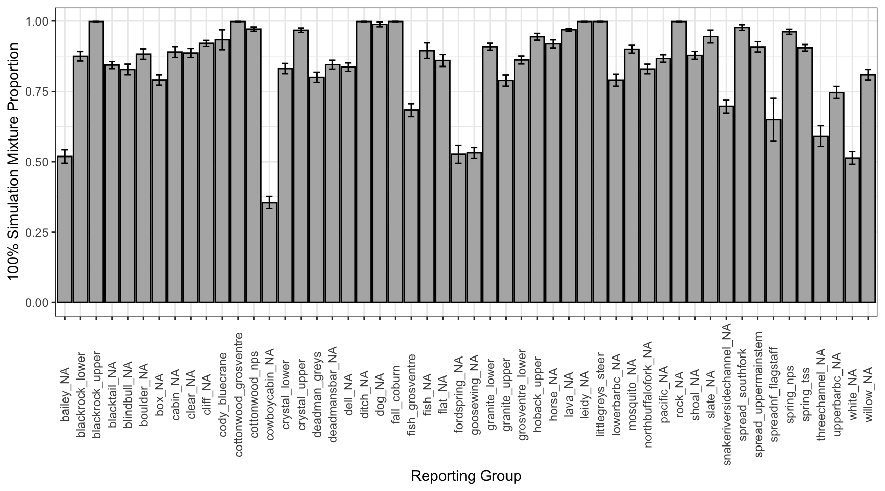
quartz_off_screen
2